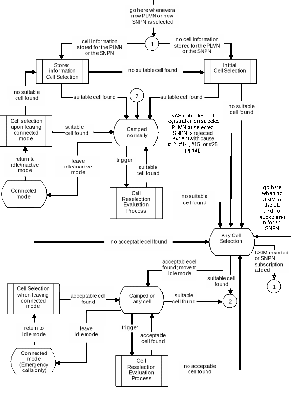

3GPP
TS 38.304 V19.1.0 (2025-12)
Technical Specification
3rd Generation Partnership
Project;
Technical Specification
Group Radio Access Network;
NR;
User Equipment (UE)
procedures in Idle mode and RRC Inactive state
(Release 19)


The
present document has been developed within the 3rd Generation
Partnership Project (3GPP
TM) and may be
further elaborated for the purposes of 3GPP.
The present
document has not been subject to any approval process by the 3GPP
Organizational
Partners and shall not be implemented.
This Specification is
provided for future development work within 3GPP
only. The
Organizational Partners accept no liability for any use of this
Specification.
Specifications and Reports for implementation of
the 3GPP TM
system should be obtained via the 3GPP Organizational Partners'
Publications Offices.
3GPP
Postal address
3GPP support office address
650
Route des Lucioles - Sophia Antipolis
Valbonne
- FRANCE
Tel.:
+33 4 92 94 42 00 Fax: +33 4 93 65 47 16
Internet
http://www.3gpp.org
Copyright
Notification
No part may be reproduced except
as authorized by written permission.
The copyright and the
foregoing restriction extend to reproduction in all media.
©
2025, 3GPP Organizational Partners (ARIB, ATIS, CCSA, ETSI, TSDSI,
TTA, TTC).
All
rights reserved.
UMTS™
is a Trade Mark of ETSI registered for the benefit of its members
3GPP™
is a Trade Mark of ETSI registered for the benefit of its Members
and of the 3GPP Organizational Partners
LTE™ is a Trade Mark
of ETSI registered for the benefit of its Members and of the 3GPP
Organizational Partners
GSM®
and the GSM logo are registered and owned by the GSM Association
Contents
Foreword 5
1 Scope 6
2 References 6
3 Definitions,
symbols and abbreviations 7
3.1 Definitions 7
3.2 Abbreviations 10
4 General
description of RRC_IDLE state and RRC_INACTIVE state 11
4.1 Overview 11
4.2 Functional
division between AS and NAS in RRC_IDLE state and RRC_INACTIVE
state 13
4.3 Service
types in RRC_IDLE state 16
4.4 Service
types in RRC_INACTIVE state 16
4.5 Cell
Categories 16
5 Process
and procedure descriptions 18
5.1 PLMN
selection and SNPN selection 18
5.1.1 Support
for PLMN selection 18
5.1.1.1 General 18
5.1.1.2 NR
case 18
5.1.1.3 E-UTRA
case 18
5.1.2 Support
for SNPN selection 19
5.1.2.1 General 19
5.1.2.2 NR
case 19
5.2 Cell
selection and reselection 19
5.2.1 Introduction 19
5.2.2 States
and state transitions in RRC_IDLE state and RRC_INACTIVE state 20
5.2.3 Cell
Selection process 21
5.2.3.1 Description 21
5.2.3.2 Cell
Selection Criterion 22
5.2.3.3 E-UTRAN
case in Cell Selection 23
5.2.4 Cell
Reselection evaluation process 23
5.2.4.1 Reselection
priorities handling 23
5.2.4.2 Measurement
rules for cell re-selection 26
5.2.4.3 Mobility
states of a UE 28
5.2.4.3.0 Introduction 28
5.2.4.3.1 Scaling
rules 28
5.2.4.4 Cells
with cell reservations, access restrictions or unsuitable for normal
camping 29
5.2.4.5 NR
Inter-frequency and inter-RAT Cell Reselection criteria 30
5.2.4.6 Intra-frequency
and equal priority inter-frequency Cell Reselection criteria 30
5.2.4.7 Cell
reselection parameters in system information broadcasts 31
5.2.4.7.0 General
reselection parameters 31
5.2.4.7.1 Speed
dependent reselection parameters 34
5.2.4.7.2 Slice-based
cell reselection parameters 34
5.2.4.8 Inter-RAT
Cell reselection in RRC_INACTIVE state 35
5.2.4.9 Relaxed
measurement 35
5.2.4.9.0 Relaxed
measurement rules 35
5.2.4.9.1 Relaxed
measurement criterion for UE with low mobility 36
5.2.4.9.2 Relaxed
measurement criterion for UE not at cell edge 37
5.2.4.9.3 Relaxed
measurement criterion for a stationary (e)RedCap UE 37
5.2.4.9.4 Relaxed
measurement criterion for a stationary (e)RedCap UE not at cell
edge 37
5.2.4.10 Cell
reselection with CAG cells 37
5.2.4.11 Reselection
priorities for slice-based cell reselection 37
5.2.4.12 Relaxed
measurement and measurement offloading for UE supporting LP-WUS 38
5.2.4.12.1 Relaxed
measurement rules 39
5.2.4.12.2 Relaxed
measurement criterion 39
5.2.4.12.3 Serving
cell measurement offloading rules 39
5.2.4.12.4 Serving
cell measurement offloading criterion 39
5.2.5 Camped
Normally state 40
5.2.6 Selection
of cell at transition to RRC_IDLE or RRC_INACTIVE state 41
5.2.7 Any
Cell Selection state 41
5.2.8 Camped
on Any Cell state 41
5.3 Cell
Reservations and Access Restrictions 42
5.3.0 Introduction 42
5.3.1 Cell
status and cell reservations 42
5.3.2 Unified
access control 47
5.4 Tracking
Area registration 47
5.5 RAN
Area registration 47
6 Reception
of broadcast information 47
6.1 Reception
of system information 47
6.2 Reception
of MBS 48
7 Paging 48
7.1 Discontinuous
Reception for paging 48
7.2 Paging
Early Indication 51
7.2.1 Paging
Early Indication reception 51
7.3 Subgrouping
for PEI 52
7.3.0 General 52
7.3.1 CN
assigned subgrouping 53
7.3.2 UE_ID
based subgrouping 53
7.4 Paging
in extended DRX 53
7.5 LP-WUS
monitoring 55
7.5.0 General 55
7.5.1 Condition
for LP-WUS monitoring 56
7.6 Subgrouping
for LP-WUS 57
7.6.0 General 57
7.6.1 CN
assigned subgrouping 57
7.6.2 UE_ID
based subgrouping 57
8 Sidelink
Operation 58
8.1 NR
sidelink communication, and V2X sidelink communication, NR sidelink
discovery, and ranging/ sidelink positioning 58
8.2 Cell
selection and reselection for Sidelink 59
8.2.1 Parameters
used for cell selection and reselection triggered for sidelink 59
9 Tracking
Reference Signal 59
Annex
A (informative): Example of Hashed ID Calculation using 32-bit
FCS 60
Annex
B (informative): Change history 61
Foreword
This Technical Specification has
been produced by the 3rd Generation Partnership Project (3GPP).
The contents of the present
document are subject to continuing work within the TSG and may change
following formal TSG approval. Should the TSG modify the contents of
the present document, it will be re-released by the TSG with an
identifying change of release date and an increase in version number
as follows:
Version x.y.z
where:
x the first digit:
1 presented to TSG for
information;
2 presented to TSG for approval;
3 or greater indicates TSG
approved document under change control.
y the second digit is incremented
for all changes of substance, i.e. technical enhancements,
corrections, updates, etc.
z the third digit is incremented
when editorial only changes have been incorporated in the document.
1 Scope
The present document specifies
the Access Stratum (AS) part of the UE procedures in RRC_IDLE state
(also called Idle mode) and RRC_INACTIVE state. The non-access
stratum (NAS) part of Idle mode procedures and processes is specified
in TS 23.122 [9].
The present document specifies
the model for the functional division between the NAS and AS in a UE.
The present document applies to
all UEs that support at least NR Radio Access, including multi-RAT
UEs as described in 3GPP specifications, in the following cases:
- When the UE is camped on a NR
cell;
- When the UE is searching for a
cell to camp on;
NOTE: When the UE is camped on or
searching for a cell to camp on belonging to other RATs, the UE
behaviour is described in the specifications of the other RATs.
2 References
The following documents contain
provisions which, through reference in this text, constitute
provisions of the present document.
- References are either specific
(identified by date of publication, edition number, version number,
etc.) or non‑specific.
- For a specific reference,
subsequent revisions do not apply.
- For a non-specific reference,
the latest version applies. In the case of a reference to a 3GPP
document (including a GSM document), a non-specific reference
implicitly refers to the latest version of that document in the
same Release as the present document.
[1] 3GPP TR 21.905:
"Vocabulary for 3GPP Specifications".
[2] 3GPP TS 38.300: "NR
Overall Description; Stage 2".
[3] 3GPP TS 38.331: "NR;
Radio Resource Control (RRC) - Protocol Specification".
[4] 3GPP TS 38.213: "NR;
Physical layer procedures for control ".
[5] Void
[6] 3GPP TS 36.331: "E-UTRA;
Radio Resource Control (RRC) - Protocol Specification".
[7] 3GPP TS 36.304: "E-UTRA;
User Equipment (UE) procedures in RRC_IDLE state ".
[8] 3GPP TS 38.133: "NR;
Requirements for Support of Radio Resource Management".
[9] 3GPP TS 23.122: "NAS
functions related to Mobile Station (MS) in RRC_IDLE state".
[10] 3GPP TS 23.501: "System
Architecture for the 5G System; Stage 2".
[11] 3GPP TS 38.215: "NR;
Physical layer measurements".
[12] 3GPP TS 22.261:
"Service requirements for the 5G system".
[13] 3GPP TS 24.890: "5G
System – Phase 1; CT WG1 Aspects".
[14] 3GPP TS 24.501:
"Non-Access-Stratum (NAS) protocol for 5G System (5GS); Stage
3".
[15] 3GPP TS 38.101-1: "NR;
User Equipment (UE) radio transmission and reception; Part 1: Range 1
Standalone".
[16] 3GPP TS 23.287:
"Architecture enhancements for 5G System (5GS) to support
Vehicle-to-Everything (V2X) services".
[17] 3GPP TS 23.285: "Technical
Specification Group Services and System Aspects; Architecture
enhancements for V2X services".
[18] 3GPP TS 22.011: "Service
accessibility".
[19] 3GPP TS 38.321: "NR;
Medium Access Control (MAC); Protocol specification".
[20] 3GPP TS 26.517: "5G
Multicast-Broadcast User Services; Protocols and Formats".
[21] 3GPP TS 23.247:
"Architectural enhancements for 5G multicast-broadcast services;
Stage 2".
[22] 3GPP TS 23.304: "Proximity
based Services (ProSe) in 5G Systems (5GS)".
[23] 3GPP TS 23.003: "Numbering,
addressing and identification".
[24] 3GPP TS 38.306: "User
Equipment (UE) radio access capabilities".
[25] 3GPP TS 23.586: "Technical
Specification Group Services and System Aspects; Architectural
Enhancements to support Ranging based services and Sidelink
Positioning".
[26] 3GPP TS 23.256: "Support
of Uncrewed Aerial Systems (UAS) connectivity, identification and
tracking; Stage 2".
3 Definitions, symbols and abbreviations
3.1 Definitions
For the purposes of the present
document, the following terms and definitions apply:
2Rx XR UE: two
antenna port XR UE as specified in TS 38.101-1 [15].
Acceptable Cell: A cell
that satisfies certain conditions as specified in 4.5.
Allowed CAG list: A
per-PLMN list of CAG Identifiers the UE is allowed to access (see TS
23.501 [10]).
Available PLMN(s): One or
more PLMN(s) for which the UE has found at least one cell and read
its PLMN identity(ies).
Available SNPN(s): One or
more SNPN(s) for which the UE has found at least one cell and read
its SNPN identity(ies).
Barred Cell: A cell a UE
is not allowed to camp on.
CAG cell: A cell
broadcasting at least one Closed Access Group Identifier.
Camped on a cell: UE has
completed the cell selection/reselection process and has chosen a
cell. The UE monitors system information and (in most cases) paging
information.
Camped on any cell: UE is
in idle mode and has completed the cell selection/reselection process
and has chosen a cell irrespective of PLMN identity.
Child UE: A U2N Relay UE’s
next hop in downstream direction for serving a U2N Remote UE in U2N
Relay communication. Child UE can be the U2N Remote UE or a U2N Relay
UE.
Closed Access Group
Identifier: Identifier of a CAG within a PLMN.
Commercial Mobile Alert
System: Public Warning System that delivers Warning
Notifications provided by Warning Notification Providers
to CMAS capable UEs.
Downstream: direction
toward child node or UE in IAB-topology or U2N Remote UE in U2N Relay
communication.
Earth-fixed cell: An NTN
cell fixed with respect to a certain geographic area on the earth all
the time. It can be provisioned by beam(s) continuously covering the
same geographical areas all the time (e.g., the case of GSO
satellites).
Earth-moving cell: An NTN
cell moving on the ground. It can be provisioned by beam(s) whose
coverage area slides over the Earth surface (e.g., the case of NGSO
satellites generating fixed or non-steerable beams).
eCall Only Mode: A UE
configuration option that allows the UE to register at 5GC and
register in IMS to perform only eCall Over IMS, and a non-emergency
IMS call for test and/or terminal reconfiguration services.
EHPLMN: Any of the
PLMN entries contained in the Equivalent HPLMN list TS 23.122 [9].
Equivalent PLMN list:
List of PLMNs considered as equivalent by the UE for cell
selection, cell reselection, and handover according to the
information provided by the NAS.
Equivalent SNPN list:
List of SNPNs considered as equivalent by the UE for cell
selection, cell reselection, and handover according to the
information provided by the NAS.
eRedCap UE: A UE
with enhanced reduced capabilities as specified in clause 4.2.22 in
TS 38.306 [24].
First U2N Relay UE: an
Intermediate U2N Relay UE having both PC5 connection to a parent UE
and PC5 connection to a U2N Remote UE for serving the U2N Remote UE
in case of multi-hop L2 U2N Relay communication.
Home PLMN: A PLMN where
the Mobile Country Code (MCC) and Mobile Network Code (MNC) of the
PLMN identity are the same as the MCC and MNC of the IMSI.
HSDN cell: A cell that has
higher priority than other cells for cell reselection for HSDN
capable UE in a High-mobility state.
IAB-MT: As defined in TS
38.300 [2]. A mobile IAB-MT uses the same procedures and behaviours
(including Cell Reservations and Access Restrictions) specified for
the IAB-MT, unless explicitly stated otherwise.
Intermediate U2N Relay UE:
a U2N Relay UE having both PC5 connection to a parent UE and PC5
connection to a child UE or a U2N Remote UE for serving the U2N
Remote UE in case of multi-hop L2 U2N Relay communication.
Last U2N Relay UE: a U2N
Relay UE having both Uu connection to the network and PC5 connection
to a child UE for serving a U2N Remote UE in case of L2 U2N Relay
communication.
Mobile-IAB cell: As
defined in TS 38.300 [2].
Network Identifier:
Identifier of an SNPN in combination with a PLMN ID (TS 23.501 [10]).
Non-Public Network: A
network deployed for non-public use, as defined in TS 22.261 [12].
Non-terrestrial network:
An NG-RAN consisting of gNBs, which provides non-terrestrial NR
access to UEs by means of an NTN payload embarked on an airborne or
space-borne NTN vehicle and an NTN Gateway.
NR sidelink
communication: AS functionality enabling at least
V2X Communication as defined in TS 23.287 [16] and/or A2X
Communication as defined in TS 23.256 [26], and ProSe communication
(including ProSe non-Relay, UE-to-Network Relay communication and,
UE-to-UE Relay communication including UE-to-UE Relay communication
with integrated discovery) as defined in TS 23.304 [22], between two
or more nearby UEs, using NR technology but not traversing any
network node.
NR sidelink discovery: AS
functionality enabling ProSe non-Relay Discovery, ProSe UE-to-Network
Relay discovery and ProSe UE-to-UE Relay discovery for Proximity
based Services as defined in TS 23.304 [22] between two or more
nearby UEs, using NR technology but not traversing any network node.
Paging adaptation: As
defined in TS 38.300 [2].
Parent UE: A U2N Remote UE
or U2N Relay UE’s next hop U2N Relay UE in upstream direction for
serving the U2N Remote UE in U2N Relay communication.
PC5 Relay RLC channel: an
RLC channel between L2 U2N Remote UE and L2 U2N Relay UE, between L2
U2N Relay UEs (in case of multi-hop L2 U2N relay communication), or
between L2 U2U Remote UE and L2 U2U Relay UE, which is used to
transport packets over PC5 for L2 UE-to-Network/UE-to-UE Relay.
Process: A local action in
the UE invoked by an RRC procedure or an RRC_IDLE or RRC_INACTIVE
state procedure.
Quasi-Earth fixed cell: An
NTN cell fixed with respect to a certain geographic area on the earth
during a certain time duration. It can be provisioned by beam(s)
covering one geographic area for a limited period and a different
geographic area during another period (e.g., the case of NGSO
satellites generating steerable beams).
Radio Access Technology:
Type of technology used for radio access, for instance NR or E-UTRA.
Ranging/Sidelink Positioning:
AS functionality enabling ranging-based services and sidelink
positioning as defined in TS 23.586 [25].
RedCap UE: A UE with
reduced capabilities as specified in clause 4.2.21 in TS 38.306 [24].
Registration Area: (NAS)
registration area is an area in which the UE may roam without a need
to perform location registration, which is a NAS procedure.
Registered PLMN: This is
the PLMN on which certain Location Registration outcomes have
occurred, as specified in TS 23.122 [9].
Registered SNPN: This is
the SNPN on which certain Location Registration outcomes have
occurred, as specified in TS 23.122 [9].
Reserved Cell: A cell on
which camping is not allowed, except for particular UEs, if so
indicated in the system information.
Selected PLMN: This is the
PLMN that has been selected by the NAS, either manually or
automatically.
Selected SNPN: This is the
SNPN that has been selected by the NAS, either manually or
automatically.
Serving cell: The cell on
which the UE is camped.
Sidelink: UE to UE
interface for V2X sidelink communication defined in TS 23.287[16].
SNPN Access Mode: Mode of
operation wherein UE only selects SNPNs (as defined in TS 23.501
[10]).
SNPN identity: An
identifier of an SNPN comprising of a PLMN ID and an NID combination.
Strongest cell: The cell
on a particular frequency that is considered strongest according to
the layer 1 cell search procedure (TS 38.213 [4], TS 38.215 [11]).
Suitable Cell: This is a
cell on which a UE may camp. For NR cell, the criteria are defined in
clause 4.5, for E-UTRA cell in TS 36.304 [7].
U2N Relay UE: a UE that
provides functionality to support connectivity to the network for U2N
Remote UE(s). Up to three L2 U2N Relay UEs (i.e. one Last U2N Relay
and up to two Intermediate U2N Relays including one First U2N Relay)
can be configured for serving a L2 U2N Remote UE in multi-hop L2 U2N
Relay communication in this release.
U2N Remote UE: a UE that
communicates with the network via one or more U2N Relay UEs on an
indirect path.
U2U Relay UE: a UE that
provides functionality to support connectivity for U2U Remote UE(s).
U2U Remote UE: a UE that
communicates with other UE(s) via a U2U Relay UE.
UE-to-Network Relay
communication: A mode of communication in which a UE communicates
with the network through an indirect path involving only one U2N
Relay UE for single-hop L2 U2N Relay communication or multiple L2 U2N
Relay UEs for multi-hop L2 U2N Relay communication.
UE-to-Network Relay
discovery: A mode of NR sidelink discovery in which a UE
discovers other UEs for U2N Relay communication.
V2X sidelink
communication: AS functionality enabling V2X
Communication as defined in TS 23.285 [17], between nearby UEs, using
E-UTRA technology but not traversing any network node.
3.2 Abbreviations
For the purposes of the present
document, the abbreviations given in TR 21.905 [1] and the
following apply. An abbreviation defined in the present document
takes precedence over the definition of the same abbreviation, if
any, in TR 21.905 [1].
AS Access Stratum
ATG Air To Ground
CAG Closed Access Group
CAG-ID Closed Access Group
Identifier
CMAS Commercial Mobile Alert
System
CN Core Network
DCI Downlink Control Information
DRX Discontinuous Reception
DTX Discontinuous Transmission
eDRX Extended DRX
ETWS Earthquake and Tsunami
Warning System
E-UTRA Evolved UMTS Terrestrial
Radio Access
E-UTRAN Evolved UMTS Terrestrial
Radio Access Network
GIN Group ID for Network
selection
H-SFN Hyper System Frame Number
HRNN Human-Readable Network Name
HSDN High Speed Dedicated Network
IAB Integrated Access and
Backhaul
IMSI International Mobile
Subscriber Identity
ISA Intended Service Area
L2 Layer-2
LO LP-WUS Occasion
LP-WUS Low Power-Wake Up Signal
LR Low Power-Wake Up Receiver
MBS Multicast/Broadcast Services
MBS FSAI MBS Frequency Selection
Area Identity
MCC Mobile Country Code
MCCH MBS Control Channel
MICO Mobile Initiated Connection
Only
MR Main Receiver
MRB MBS Radio Bearer
MTCH MBS Traffic Channel
NAS Non-Access Stratum
NCR Network-Controlled Repeater
NCR-Fwd NCR Forwarding
NCR-MT NCR Mobile Termination
NES Network Energy Savings
NID Network Identifier
NPN Non-Public Network
NR NR Radio Access
NSAG Network Slice AS Group
NTN Non-Terrestrial Network
OD-SIB1 On-demand SIB1
PEI Paging Early Indication
PEI-O Paging Early
Indication-Occasion
PH Paging Hyperframe
PLMN Public Land Mobile Network
PTW Paging Time Window
RAT Radio Access Technology
RNA RAN-based Notification Area
RNAU RAN-based Notification Area
Update
RRC Radio Resource Control
SDT Small Data Transmission
SL Sidelink
SNPN Stand-alone Non-Public
Network
TN Terrestrial Network
TRS Tracking Reference Signal
U2N UE-to-Network
U2U UE-to-UE
UAC Unified Access Control
UE User Equipment
UMTS Universal Mobile
Telecommunications System
VSAT Very Small Aperture Terminal
V2X Vehicle to Everything
4 General description of RRC_IDLE state and RRC_INACTIVE state
4.1 Overview
The RRC_IDLE state and
RRC_INACTIVE state tasks can be subdivided into three processes:
- PLMN selection (for UE not
operating in SNPN access mode) or SNPN selection (for UE operating in
SNPN access mode);
- Cell selection and reselection;
- Location registration and RNA
update.
PLMN selection, SNPN selection,
cell reselection procedures, and location registration are common for
both RRC_IDLE state and RRC_INACTIVE state. RNA update is only
applicable for RRC_INACTIVE state. When UE selects a new PLMN or
SNPN, UE transitions from RRC_INACTIVE to RRC_IDLE, as specified in
TS 24.501 [14].
When a UE is switched on, a
public land mobile network (PLMN) or a SNPN is selected by NAS. For
the selected PLMN/SNPN, associated RAT(s) may be set, as specified in
TS 23.122 [9]. The NAS shall provide a list of equivalent PLMNs or a
list of equivalent SNPNs, if available, that the AS shall use for
cell selection and cell reselection.
With cell selection, the UE
searches for a suitable cell of the selected PLMN or selected SNPN,
chooses that cell to provide available services, and monitors its
control channel. This procedure is defined as "camping on the
cell".
The UE shall, if necessary, then
register its presence, by means of a NAS registration procedure, in
the tracking area of the chosen cell. As an outcome of a successful
Location Registration, the selected PLMN/SNPN then becomes the
registered PLMN/SNPN, as specified in TS 23.122 [9].
If the UE finds a more suitable
cell, according to the cell reselection criteria, it reselects onto
that cell and camps on it. If the new cell does not belong to at
least one tracking area to which the UE is registered, location
registration is performed. In RRC_INACTIVE state, if the new cell
does not belong to the configured RNA, an RNA update procedure is
performed.
If necessary, the UE shall search
for higher priority PLMNs at regular time intervals as described in
TS 23.122 [9] and search for a suitable cell if another PLMN has been
selected by NAS.
For UE not operating in SNPN
access mode, search of available CAGs may be triggered by NAS to
support manual CAG selection. The AS shall report available CAG-ID(s)
together with their HRNN (if broadcast) and PLMN(s) to the NAS.
NAS may also provide the network
slice(s) and Network Slice AS Group (NSAG) information, which
contains NSAG(s), their applicable TA(s) if present and their
priorities, to be considered by the UE during cell reselection (as
specified in TS 23.501 [10], TS 24.501 [14]).
If the UE loses coverage of the
registered PLMN/SNPN, either a new PLMN/SNPN is selected
automatically (automatic mode), or an indication of available
PLMNs/SNPNs is given to the user so that a manual selection can be
performed (manual mode). As part of manual SNPN selection, the AS
shall report available SNPN identifiers together with their HRNN (if
broadcast) to the NAS.
Registration is not performed by
UEs only capable of services that need no registration.
The UE may perform NR sidelink
communication and/or V2X sidelink communication while in-coverage or
out-of-coverage for sidelink, as specified in clause 8.
The U2N Remote UE, the U2N Relay
UE, the U2U Remote UE, or the U2U Relay UE may perform sidelink
discovery transmissions while in-coverage for the purposes of
sidelink relay operations, as specified in clause 8. In addition, the
U2N Remote UE, the U2U Remote UE, or the U2U Relay UE can also
perform sidelink discovery transmissions while out-of-coverage for
the purposes of sidelink relay operations.
An L2 U2N Remote UE in RRC_IDLE
or in RRC_INACTIVE may perform all the relevant procedures (e.g.,
acquiring system information and paging message) via the L2 U2N Relay
UE. An L2 U2N Remote UE may choose not to perform any procedures
related to cell selection and reselection.
The UE may perform NR sidelink
discovery transmissions while in-coverage or out-of-coverage for the
purpose of sidelink non-relay operations, as specified in clause 8.
The UE may perform
ranging/sidelink positioning while in-coverage or out-of-coverage, as
specified in clause 8.
The purpose of camping on a cell
in RRC_IDLE state and RRC_INACTIVE state is as follows:
a) It enables the UE to receive
system information from the PLMN or the SNPN.
b) When registered and if the UE
wishes to establish an RRC connection or resume a suspended RRC
connection, it can do this by initially accessing the network on the
control channel of the cell on which it is camped.
c) If the network needs to send a
message or deliver data to the registered UE, it knows (in most
cases) the set of tracking areas (in RRC_IDLE state) or RNA (in
RRC_INACTIVE state) in which the UE is camped. It can then send a
"paging" message for the UE on the control channels of all
the cells in the corresponding set of areas. The UE will then receive
the paging message and can respond.
d) It enables the UE to receive
ETWS and CMAS notifications.
e) It enables the UE to receive
MBS broadcast services.
f) It enables the UE to receive
MBS multicast services in RRC_INACTIVE state.
When the UE is in RRC_IDLE state,
upper layers may deactivate AS layer when MICO mode is activated as
specified in TS 24.501 [14]. When MICO mode is activated, the AS
configuration (e.g. priorities provided by dedicated signalling) is
kept and all running timers continue to run but the UE need not
perform any idle mode tasks. If a timer expires while MICO mode is
activated it is up to the UE implementation whether it performs the
corresponding action immediately or the latest when MICO mode is
deactivated. When MICO mode is deactivated, the UE shall perform all
idle mode tasks.
4.2 Functional division between AS and NAS in RRC_IDLE state and
RRC_INACTIVE state
Table 4.2-1 presents the
functional division between UE non-access stratum (NAS) and UE access
stratum (AS) in RRC_IDLE state and RRC_INACTIVE states. The NAS part
is specified in TS 23.122 [9] and the AS part in the present
document.
Table 4.2-1: Functional division between AS and NAS in RRC_IDLE
state and RRC_INACTIVE state
RRC_IDLE and
RRC_INACTIVE state Process
|
UE Non-Access Stratum
|
UE Access Stratum
|
PLMN Selection and SNPN
Selection
|
For a UE not operating
in SNPN access mode, perform the following:
Maintain a list of PLMNs in
priority order according to TS 23.122 [9]. Select a PLMN using
automatic or manual mode as specified in TS 23.122 [9] and
request AS to select a cell belonging to this PLMN. For each
PLMN, associated RAT(s) may be set.
Evaluate reports of
available PLMNs and any associated CAG-IDs from AS for PLMN
selection.
Maintain a list of
equivalent PLMN identities.
Maintain a list of "PLMNs
not allowed to operate at the present UE location".
Maintain applicable
disaster roaming information for available PLMNs including
potential disaster PLMNs for available PLMNs.
To support manual CAG
selection, provide request to search for available CAGs and
evaluate reports of available CAGs from AS for CAG selection.
For a UE operating in
SNPN access mode, perform the following:
Maintain a list of SNPNs
according to TS 23.122 [9]. Select a SNPN using automatic or
manual mode as specified in TS 23.122 [9] and request AS to
select a cell belonging to this SNPN.
Evaluate reports of
available SNPNs from AS for SNPN selection.
Maintain a list of
equivalent SNPN identities.
|
For a UE not operating in
SNPN access mode, search for available PLMNs.
If associated RAT(s) is
(are) set for the PLMN, search in this (these) RAT(s) and other
RAT(s) for that PLMN as specified in TS 23.122 [9].
For a UE operating in SNPN
access mode, search for available SNPNs only consider NR cells.
Perform measurements to
support PLMN/SNPN selection.
Synchronise to a broadcast
channel to identify found PLMNs/SNPNs.
Report available PLMNs and
any associated CAG-IDs with associated RAT(s) to NAS on request
from NAS or autonomously.
Report applicable disaster
roaming information for available PLMNs autonomously including
potential disaster PLMNs.
For a UE operating in SNPN
access mode, report available SNPNs to NAS autonomously; report
information related to SNPN access with subscription of a
different Credentials Holder, indicator whether onboarding is
enabled, and the list of supported GINs to NAS autonomously, as
specified in TS 38.331 [3].
To support manual CAG
selection, perform the following:
Search for cells
broadcasting a CAG-ID.
Read the HRNN (if
broadcast) for each CAG-ID if a cell broadcasting a CAG-ID is
found.
Report CAG-ID(s) of found
cell(s) broadcasting a CAG-ID together with the associated manual
CAG selection allowed indicator, HRNN and PLMNto NAS.
On selection of a CAG by
NAS, select any acceptable or suitable cell belonging to the
selected CAG and give an indication to NAS that access is
possible (for the registration procedure)
To support manual SNPN
selection, report available SNPNs together with associated HRNNs
(if available) to NAS on request from NAS.
|
Cell
Selection
|
Control cell selection for
example by indicating RAT(s) associated with the selected PLMN to
be used initially in the search of a cell in the cell selection.
For a UE not operating in
SNPN access mode,
maintain a list of
equivalent PLMN identities and provide the list to AS.
Maintain a list of
"Forbidden Tracking Areas" and provide the list to AS.
Maintain
a list of "PLMNs not allowed to operate at the present UE
location" and provide the list to AS.
Maintain a list of "PLMNs
with associated access technology restrictions" and provide
the list to AS.
For a UE not operating in
SNPN access mode: Maintain Allowed CAG list and optional CAG-only
indication along with associated PLMN ID(s) on which the UE is
allowed access and provide these lists to AS. To support manual
CAG selection, select a CAG and request AS to select a cell
belonging to this CAG.
|
Perform measurements needed
to support cell selection.
Detect and synchronise to a
broadcast channel. Receive and handle broadcast information.
Forward NAS system information to NAS.
Search for a suitable cell.
The cells broadcast one or more 'PLMN identity' or 'SNPN
identity' (for a UE operating in SNPN access mode) in the system
information. Respond to NAS whether such cell is found or not.
If associated RATs is (are)
set for the PLMN, perform the search in this (these) RAT(s) and
other RATs for that PLMN as specified in TS 23.122 [9].
If a cell is found which
satisfies cell selection criteria, camp on that cell.
|
Cell
Reselection
|
For a UE not operating in
SNPN access mode,
maintain a list of
equivalent PLMN identities and provide the list to AS.
For
a UE operating in SNPN access mode,
maintain a list of
equivalent SNPN identities and provide the list to AS.
Maintain a list of
"Forbidden Tracking Areas" and provide the list to AS.
Maintain a list of "PLMNs
not allowed to operate at the present UE location" and
provide the list to AS.
Maintain a list of "PLMNs
with associated access technology restrictions" and provide
the list to AS.
For a UE not operating in
SNPN access mode, maintain Allowed CAG list and optional CAG-only
indication along with associated PLMN ID(s) on which the UE is
allowed access and provide these lists to AS.
Maintain the network
slice(s) and NSAG information and provide network slice(s) and
NSAG information to AS.
|
Perform measurements needed
to support cell reselection.
Detect and synchronise to a
broadcast channel. Receive and handle broadcast information.
Forward NAS system information to NAS.
Change cell if a more
suitable cell is found.
Derive cell reselection
priorities for slice-based cell reselection.
|
Location registration
|
Register the UE as active
after power on.
Register the UE's presence
in a registration area, for instance regularly or when entering a
new tracking area.
Deregister UE when shutting
down.
Maintain a list of
"Forbidden Tracking Areas".
Maintain a list of "PLMNs
not allowed to operate at the present UE location".
Control and restrict
location registration for a UE in eCall Only Mode.
|
Report registration area
information to NAS.
|
RAN Notification Area
Update
|
Not applicable.
|
Register the UE's presence
in a RAN-based notification area (RNA), periodically or when
entering a new RNA.
|
4.3 Service types in RRC_IDLE state
This clause defines the level of
service that may be provided by the network to a UE in RRC_IDLE
state. The following three levels of services are provided while a UE
is in RRC_IDLE state:
- Limited service (emergency
calls, ETWS and CMAS on an acceptable cell);
- Normal service (for public use
or non-public use on a suitable cell);
- Operator service (for operators
only on a reserved cell).
4.4 Service types in RRC_INACTIVE state
This clause defines the level of
service that may be provided by the network to a UE in RRC_INACTIVE
state. The following two levels of services are provided while a UE
is in RRC_INACTIVE state:
- Normal service (for public use
or non-public use on a suitable cell);
- Operator service (for operators
only on a reserved cell).
4.5 Cell Categories
The cells are categorised
according to which services they offer:
acceptable cell:
An "acceptable cell" is
a cell on which the UE may camp to obtain limited service (originate
emergency calls and receive ETWS and CMAS notifications). Such a cell
shall fulfil the following requirements, which is the minimum set of
requirements to initiate an emergency call and to receive ETWS and
CMAS notification in an NR network:
- The cell is not barred, see
clause 5.3.1;
- The cell selection criteria are
fulfilled, see clause 5.2.3.2.
suitable cell:
For UE not operating in SNPN
Access Mode, a cell is considered as suitable if the following
conditions are fulfilled:
- The cell is part of either the
selected PLMN or the registered PLMN or PLMN of the Equivalent PLMN
list, and for that PLMN either:
- The PLMN-ID of that PLMN is
broadcast by the cell with no associated CAG-IDs and CAG-only
indication in the UE for that PLMN (TS 23.501 [10]) is absent or
false;
- Allowed CAG list in the UE for
that PLMN (TS 23.501 [10]) includes a CAG-ID broadcast by the cell
for that PLMN;
- The cell selection criteria are
fulfilled, see clause 5.2.3.2.
According to the latest
information provided by NAS:
- The cell is not barred, see
clause 5.3.1;
- The cell is part of at least
one TA that is not part of the list of "Forbidden Tracking Areas
for Roaming" (TS 22.011 [18]), which belongs to a PLMN that
fulfils the first bullet above;
- The access technology of the
cell is not marked as restricted for the PLMN that fulfils the first
bullet above in the list of "PLMNs with associated access
technology restrictions" (TS 23.122 [9]).
For UE operating in SNPN Access
Mode, a cell is considered as suitable if the following conditions
are fulfilled:
- The cell is part of the
selected SNPN or the registered SNPN or SNPN of the Equivalent SNPN
list of the UE;
- The cell selection criteria are
fulfilled, see clause 5.2.3.2;
According to the latest
information provided by NAS:
- The cell is not barred, see
clause 5.3.1;
- The cell is part of at least
one TA that is not part of the list of "Forbidden Tracking Areas
for Roaming" which belongs to the selected SNPN or the
registered SNPN or SNPN of the Equivalent SNPN list of the UE.
barred cell:
A cell is barred if it is so
indicated in the system information, as specified in TS 38.331 [3].
reserved cell:
A cell is reserved if it is so
indicated in system information, as specified in TS 38.331 [3].
Following exception to these
definitions are applicable for UEs:
- if a UE has an ongoing
emergency call, all acceptable cells of that PLMN/SNPN are treated as
suitable for the duration of the emergency call.
- camped on a cell that belongs
to a tracking area that is forbidden for regional provision of
service; a cell that belongs to a tracking area that is forbidden for
regional provision service (TS 23.122 [9], TS 24.501 [14]) is
suitable but provides only limited service.
- if the UE in RRC_IDLE fulfils
the conditions to support NR sidelink communication/discovery or V2X
sidelink communication in limited service state as specified in
TS23.287 [16] clause 5.7, the UE may perform NR sidelink
communication/discovery or V2X sidelink communication.
NOTE: UE is not required to
support manual search and selection of PLMN or CAG or SNPN while in
RRC CONNECTED state. The UE may use local release of RRC connection
to perform manual search if it is not possible to perform the search
while RRC connected.
5 Process and procedure descriptions
5.1 PLMN selection and SNPN selection
In the UE not operating in SNPN
access mode, the AS shall report available PLMNs and any associated
CAG-IDs to the NAS on request from the NAS or autonomously. In the UE
operating in SNPN access mode, the AS shall report available SNPNs to
the NAS on request from the NAS or autonomously.
During PLMN selection, based on
the list of PLMN identities in priority order, the particular PLMN
may be selected either automatically or manually. Each PLMN in the
list of PLMN identities is identified by a 'PLMN identity'. In the
system information on the broadcast channel, the UE can receive one
or multiple 'PLMN identity' in a given cell. The result of the PLMN
selection performed by NAS (see TS 23.122 [9]) is an identifier of
the selected PLMN.
During SNPN selection, based on
the list of SNPN identities, the particular SNPN may be selected
either automatically or manually. Each SNPN in the list of SNPN
identities is identified by a 'SNPN identity'. In the system
information on the broadcast channel, the UE can receive one or
multiple 'SNPN identity' in a given cell and optionally may receive
associated HRNNs; the UE may also optionally receive indicators for
whether an SNPN allows access using credentials from a Credentials
Holder, whether an SNPN allows registration attempts from UEs that
are not explicitly configured to select this SNPN, and whether an
SNPN allows onboarding; the UE may also optionally receive a list of
supported Group IDs for Network selection (see TS 38.331 [3]). The
result of the SNPN selection performed by NAS (see TS 23.122 [9]) is
an identifier of the selected SNPN.
5.1.1 Support for PLMN selection
5.1.1.1 General
On request of the NAS, the AS
shall perform a search for available PLMNs and report them to NAS.
5.1.1.2 NR case
The UE shall scan all RF channels
in the NR bands according to its capabilities to find available PLMNs
and available CAGs. On each carrier, the UE shall search for the
strongest cell and read its system information, in order to find out
which PLMN(s) the cell belongs to and any associated CAG(s). For
operation with shared spectrum channel access, the UE may also read
the system information of multiple strongest cell(s). If the UE can
read one or several PLMN identities in the strongest cell or the
multiple strongest cell(s) in case of operation with shared spectrum
channel access, each found PLMN (see the PLMN reading in TS 38.331
[3]) shall be reported to the NAS as a high quality PLMN (but without
the RSRP value) and any associated CAG-ID, provided that the
following high-quality criterion is fulfilled:
1. For an NR cell, the measured
RSRP value shall be greater than or equal to -110 dBm.
Found PLMNs that do not satisfy
the high-quality criterion but for which the UE has been able to read
the PLMN identities are reported to the NAS together with their
corresponding RSRP values and any associated CAG-ID. The quality
measure reported by the UE to NAS shall be the same for each PLMN
found in one cell.
The search for PLMNs may be
stopped on request from the NAS. The UE may optimise PLMN search by
using stored information e.g. frequencies and optionally also
information on cell parameters from previously received measurement
control information elements.
Once the UE has selected a PLMN,
the cell selection procedure shall be performed in order to select a
suitable cell of that PLMN to camp on.
To support manual CAG selection,
the UE shall upon request by NAS report available CAG-ID(s) together
with their manual CAG selection allowed indicator (if broadcast),
HRNN (if broadcast) and PLMN(s) to the NAS. If NAS has selected a CAG
and provided this selection to AS, the UE shall search for an
acceptable or suitable cell belonging to the selected CAG to camp on.
5.1.1.3 E-UTRA case
Support for PLMN selection in
E-UTRA is described in TS 36.304 [7].
5.1.2 Support for SNPN selection
5.1.2.1 General
On request of the NAS, the AS
shall perform a search for available SNPNs on only NR cells and
report them to NAS.
5.1.2.2 NR case
The UE shall scan all RF channels
in the NR bands according to its capabilities to find available
SNPNs. On each carrier, the UE shall search for the strongest cell
and read its system information, in order to find out which SNPN(s)
the cell belongs to. For operation with shared spectrum channel
access, the UE may also read the system information of multiple
strongest cell(s). If the UE can read one or several SNPN identities
in the strongest cell, each found SNPN (see the SNPN reading in TS
38.331 [3]) shall be reported to the NAS. For manual selection, UE
shall upon request by NAS report available SNPN identifiers together
with their HRNN (if broadcast) to the NAS and the search for
available SNPNs may be stopped on request of the NAS.
The search for SNPNs may be
stopped on request from the NAS. The UE may optimise SNPN search by
using stored information e.g. frequencies and optionally also
information on cell parameters from previously received measurement
control information elements.
Once the UE has selected a SNPN,
the cell selection procedure shall be performed in order to select a
suitable cell of that SNPN to camp on.
5.2 Cell selection and reselection
5.2.1 Introduction
UE shall perform measurements for
cell selection and reselection purposes as specified in TS 38.133
[8].
When evaluating Srxlev and Squal
of non-serving cells for reselection evaluation purposes, the UE
shall use parameters provided by the serving cell and for the final
check on cell selection criterion, the UE shall use parameters
provided by the target cell for cell reselection.
The NAS can control the RAT(s) in
which the cell selection should be performed, for instance by
indicating RAT(s) associated with the selected PLMN, and by
maintaining a list of forbidden registration area(s), and by
maintaining a list of "PLMNs with associated access technology
restrictions" and a list of equivalent PLMNs. The UE shall
select a suitable cell based on RRC_IDLE or RRC_INACTIVE state
measurements and cell selection criteria.
In order to expedite the cell
selection process, stored information for several RATs, if available,
may be used by the UE.
When camped on a cell, the UE
shall regularly search for a better cell according to the cell
reselection criteria. If a better cell is found, that cell is
selected. The change of cell may imply a change of RAT. Details on
performance requirements for cell reselection can be found in TS
38.133 [8].
For NCRs, if the NCR-MT in
RRC_INACTIVE (re)selects a cell other than the last serving cell on
which side control configuration was received, then the NCR-MT shall
indicate to NCR-Fwd to cease forwarding. If the NCR-MT in
RRC_INACTIVE detects no suitable cell, then the NCR-MT shall indicate
to NCR-Fwd to cease forwarding.
The NAS is informed if the cell
selection and reselection result in changes in the received system
information relevant for NAS.
For normal service, the UE shall
camp on a suitable cell, monitor control channel(s) of that cell so
that the UE can:
- receive system information from
the PLMN or SNPN; and
- receive registration area
information from the PLMN or SNPN, e.g., tracking area information;
and
- receive other AS and NAS
Information; and
- if registered:
- receive paging and notification
messages from the PLMN or SNPN; and
- initiate transfer to Connected
mode.
For cell selection in multi-beam
operations, measurement quantity of a cell is up to UE
implementation.
For cell reselection in
multi-beam operations, including inter-RAT reselection from E-UTRA to
NR, the measurement quantity of this cell is derived amongst the
beams corresponding to the same cell based on SS/PBCH block as
follows:
- if nrofSS-BlocksToAverage
(maxRS-IndexCellQual in E-UTRA) is not configured in SIB2/SIB4
(SIB24 in E-UTRA); or
- if
absThreshSS-BlocksConsolidation (threshRS-Index in
E-UTRA) is not configured in SIB2/SIB4 (SIB24 in
E-UTRA); or
- if the highest beam measurement
quantity value is below or equal to absThreshSS-BlocksConsolidation
(threshRS-Index in E-UTRA):
- derive a cell measurement
quantity as the highest beam measurement quantity value, where each
beam measurement quantity is described in TS 38.215 [11].
- else:
- derive a cell measurement
quantity as the linear average of the power values of up to
nrofSS-BlocksToAverage (maxRS-IndexCellQual in E-UTRA)
of highest beam measurement quantity values above
absThreshSS-BlocksConsolidation (threshRS-Index in
E-UTRA).
NOTE: If both suitable cell(s)
and suitable L2 U2N Relay UE(s) (as specified in TS 38.331 [3]) are
available, it is up to L2 U2N Remote UE's implementation to select
either a suitable cell or a suitable L2 U2N Relay UE.
5.2.2 States and state transitions in RRC_IDLE state and RRC_INACTIVE
state
Figure 5.2.2-1 shows the states
and state transitions and procedures in RRC_IDLE and RRC_INACTIVE.
Whenever a new PLMN selection or new SNPN selection is performed, it
causes an exit to number 1.

Figure 5.2.2-1: RRC_IDLE and RRC_INACTIVE Cell Selection and
Reselection
5.2.3 Cell Selection process
5.2.3.1 Description
Cell selection is performed by
one of the following two procedures:
a) Initial cell selection (no
prior knowledge of which RF channels are NR frequencies):
1. The UE shall scan all RF
channels in the NR bands according to its capabilities to find a
suitable cell.
2. On each frequency, the UE need
only search for the strongest cell, except for operation with shared
spectrum channel access where the UE may search for the next
strongest cell(s).
3. Once a suitable cell is found,
this cell shall be selected.
b) Cell selection by leveraging
stored information:
1. This procedure requires stored
information of frequencies and optionally also information on cell
parameters from previously received measurement control information
elements or from previously detected cells.
2. Once the UE has found a
suitable cell, the UE shall select it.
3. If no suitable cell is found,
the initial cell selection procedure in a) shall be started.
NOTE: Priorities between
different frequencies or RATs provided to the UE by system
information or dedicated signalling are not used in the cell
selection process.
5.2.3.2 Cell Selection Criterion
The cell selection criterion S is
fulfilled when:
where:
Srxlev = Qrxlevmeas
– (Qrxlevmin + Qrxlevminoffset )–
Pcompensation - Qoffsettemp
Squal
= Qqualmeas – (Qqualmin + Qqualminoffset)
- Qoffsettemp
|
where:
-
Srxlev
|
Cell selection RX level
value (dB)
|
Squal
|
Cell selection quality
value (dB)
|
Qoffsettemp
|
Offset temporarily applied
to a cell as specified in TS 38.331 [3] (dB)
|
Qrxlevmeas
|
Measured cell RX level
value (RSRP)
|
Qqualmeas
|
Measured cell quality value
(RSRQ)
|
Qrxlevmin
|
Minimum required RX level
in the cell (dBm). If the UE supports SUL frequency for this
cell, Qrxlevmin is obtained from q-RxLevMinSUL,
if present, in SIB1, SIB2 and SIB4,
additionally, if QrxlevminoffsetcellSUL is present in
SIB3 and SIB4 for the concerned cell, this cell
specific offset is added to the corresponding Qrxlevmin to
achieve the required minimum RX level in the concerned cell;
else Qrxlevmin
is obtained from q-RxLevMin in SIB1, SIB2 and
SIB4, additionally, if Qrxlevminoffsetcell is
present in SIB3 and SIB4 for the concerned cell,
this cell specific offset is added to the corresponding Qrxlevmin
to achieve the required minimum RX level in the concerned cell.
|
Qqualmin
|
Minimum required quality
level in the cell (dB). Additionally, if Qqualminoffsetcell
is signalled for the concerned cell, this cell specific offset is
added to achieve the required minimum quality level in the
concerned cell.
|
Qrxlevminoffset
|
Offset to the signalled
Qrxlevmin taken into account in the Srxlev evaluation
as a result of a periodic search for a higher priority PLMN while
camped normally in a VPLMN, as specified in TS 23.122 [9].
|
Qqualminoffset
|
Offset to the signalled
Qqualmin taken into account in the Squal
evaluation as a result of a periodic search for a higher priority
PLMN while camped normally in a VPLMN, as specified in TS 23.122
[9].
|
Pcompensation
|
For FR1, if the UE supports
the additionalPmax in the NR-NS-PmaxList, if
present, in SIB1, SIB2 and SIB4:
max(PEMAX1
–PPowerClass, 0) – (min(PEMAX2,
PPowerClass) – min(PEMAX1,
PPowerClass)) (dB);
else:
max(PEMAX1
–PPowerClass, 0) (dB)
For FR2, Pcompensation
is set to 0.
For IAB-MT, Pcompensation
is set to 0.
|
PEMAX1, PEMAX2
|
Maximum TX power level of a
UE may use when transmitting on the uplink in the cell (dBm)
defined as PEMAX in TS 38.101 [15]. If UE supports SUL
frequency for this cell, PEMAX1 and PEMAX2 are
obtained from the p-Max for SUL in SIB1 and
NR-NS-PmaxList for SUL respectively in SIB1, SIB2
and SIB4 as specified in TS 38.331 [3], else PEMAX1
and PEMAX2 are obtained from the p-Max and
NR-NS-PmaxList respectively in SIB1, SIB2
and SIB4 for normal UL as specified in TS 38.331 [3].
|
PPowerClass
|
Maximum RF output power of
the UE (dBm) according to the UE power class as defined in TS
38.101-1 [15].
|
The signalled values
Qrxlevminoffset and Qqualminoffset are only
applied when a cell is evaluated for cell selection as a result of a
periodic search for a higher priority PLMN while camped normally in a
VPLMN (TS 23.122 [9]). During this periodic search for higher
priority PLMN, the UE may check the S criteria of a cell using
parameter values stored from a different cell of this higher priority
PLMN.
5.2.3.3 E-UTRAN case in Cell Selection
The cell selection criteria and
procedures in E-UTRAN are specified in TS 36.304 [7].
5.2.4 Cell Reselection evaluation process
5.2.4.1 Reselection priorities handling
Absolute priorities of different
NR frequencies or inter-RAT frequencies may be provided to the UE in
the system information, in the RRCRelease message, or by
inheriting from another RAT at inter-RAT cell (re)selection. In the
case of system information, an NR frequency or inter-RAT frequency
may be listed without providing a priority (i.e. the field
cellReselectionPriority is absent for that frequency). If any
fields with cellReselectionPriority or
nsag-CellReselectionPriority are provided in dedicated
signalling, the UE shall ignore any fields with
cellReselectionPriority and nsag-CellReselectionPriority
provided in system information.
When UE is in camped normally
state, if it supports slice-based cell reselection and has received
the network slice(s) and NSAG information from NAS to be used for
cell reselection, UE shall derive reselection priorities according to
clause 5.2.4.11.
NOTE 00: UE derives reselection
priorities according to clause 5.2.4.11 also in case SIB16
(see TS 38.331 [3]) is not broadcast in the camped cell.
If dedicated frequency priority
parameters (od-sib1-CellReselectionPriority,
od-sib1-CellReselectionSubPriority) are provided in system
information, the UE supporting OD-SIB1 ignores the
cellReselectionPriority and cellReselectionSubPriority in
the system information and applies the dedicated ones to determine
frequency prioritization. If intraFreqOD-SIB1-ExcludedCellList is
provided in system information, the UE supporting OD-SIB1 ignores
intraFreqExcludedCellList and does not consider the cell(s)
(if any) in intraFreqOD-SIB1-ExcludedCellList as candidates
for cell reselection. If interFreqOD-SIB1-ExcludedCellList is
provided in system information, the UE supporting OD-SIB1 ignores
interFreqExcludedCellList and does not consider the cell(s)
(if any) in interFreqOD-SIB1-ExcludedCellList as candidates
for cell reselection.
If UE is in camped on any cell
state, UE shall only apply the priorities provided by system
information from current cell, and the UE preserves priorities
provided by dedicated signalling and deprioritisationReq
received in RRCRelease unless specified otherwise. When the UE
in camped normally state, has only dedicated priorities other than
for the current frequency, the UE shall consider the current
frequency to be the lowest priority frequency (i.e. lower than any of
the network configured values). When the HSDN capable UE is in
High-mobility state, the UE shall always consider the HSDN cells to
be the highest priority (i.e., higher than any other network
configured priorities). When the HSDN capable UE is not in
High-mobility state, the UE shall always consider HSDN cells to be
the lowest priority (i.e., lower than any other network configured
priorities). The Aerial UE may consider the frequency to be the
highest priority (i.e., higher than any other network configured
priorities) if the frequency is configured with
uav-PrioritizedFrequency without
uav-PrioritizedFrequencyAltitudeRange. The Aerial UE may
consider the frequency to be the highest priority if the frequency is
configured with uav-PrioritizedFrequency and
uav-PrioritizedFrequencyAltitudeRange, and if the
Aerial UE is within the corresponding altitude range. If the UE is
configured to perform both NR sidelink communication and V2X sidelink
communication, the UE may consider the frequency providing both NR
sidelink communication configuration and V2X sidelink communication
configuration to be the
highest priority. If the UE is configured to perform NR sidelink
communication and not perform V2X communication, the UE may consider
the frequency providing NR sidelink communication configuration to be
the highest priority. If the UE is configured to perform V2X sidelink
communication and not perform NR sidelink communication, the UE may
consider the frequency providing V2X sidelink communication
configuration to be the highest priority. If the UE is configured to
perform ranging/sidelink positioning, the UE may consider the
frequency providing ranging/sidelink positioning configuration to be
the highest priority.
A UE on a vehicle with a
mobile-IAB cell may consider the frequency for which a mobile-IAB
cell is the best cell to be the highest priority. The UE identifies a
mobile-IAB cell by mobileIAB-Cell in SIB1 (see TS 38.331 [3]).
The UE may narrow its search scope for mobile-IAB cell(s) by
mobileIAB-CellList if broadcasted in SIB4 (see TS 38.331 [3]).
A non-mobile-IAB cell may be excluded from this mobile IAB frequency
prioritization for up to 300 seconds.
NOTE 0a: The frequency only
providing the anchor frequency configuration should not be
prioritized for V2X service during cell reselection, as specified in
TS 38.331[3].
NOTE
0b: When UE is configured to perform NR sidelink communication or V2X
sidelink communication performs cell reselection, it may consider the
frequencies providing the intra-carrier and inter-carrier
configuration have equal priority in cell reselection.
NOTE 0c: The prioritization among
the frequencies which UE considers to be the highest priority
frequency is left to UE implementation unless otherwise stated.
NOTE 0d: The UE is configured to
perform V2X sidelink communication or NR sidelink communication, if
it has the capability and is authorized for the corresponding
sidelink operation.
NOTE 0e: When UE is configured to
perform both NR sidelink communication and V2X sidelink
communication, but cannot find a frequency which can provide both NR
sidelink communication configuration and V2X sidelink communication
configuration, UE may consider the frequency providing either NR
sidelink communication configuration or V2X sidelink communication
configuration to be the highest priority.
NOTE 0f: Void.
NOTE 0g: How the UE determines
itself to be on a vehicle with a mobile-IAB cell is left to the UE's
implementation.
The UE shall only perform cell
reselection evaluation for NR frequencies and inter-RAT frequencies
that are given in system information and for which the UE has a
priority provided.
If the MBS broadcast capable UE
is receiving or interested to receive an MBS broadcast service(s) and
can only receive this MBS broadcast service(s) by camping on a
frequency on which it is provided; or if the MBS ISA capable UE is
camping on an NTN cell where the ISA(s) of MBS broadcast services are
provided, and the UE is in the ISA(s) associated with MBS broadcast
service(s) it is receiving or interested to receive and can only
receive this MBS broadcast service(s) by camping on a frequency on
which it is provided, the UE may consider that frequency to be the
highest priority during the MBS broadcast session as specified in TS
38.300 [2] as long as the two following conditions are fulfilled:
1) SIB1 scheduling information of
the cell reselected by the UE due to frequency prioritization for MBS
contains SIB20;
2) Either:
- One or more MBS FSAI(s) of that
frequency is indicated in SIB21 of the serving cell and the same MBS
FSAI(s) is also indicated for this MBS broadcast service in MBS User
Service Description (USD) as specified in TS 26.517 [20], or
- SIB21 is not provided in the
serving cell and that frequency is included in the USD of this
service, or
- SIB21 is provided in the
serving cell but does not provide the frequency mapping for the
concerned service, and that frequency is included in the USD of this
service.
NOTE 0g: It is up to UE
implementation which frequency to select, when the USD provides
multiple frequencies for the service the UE is interested in.
If the MBS broadcast capable UE
is receiving or interested to receive an MBS broadcast service or if
the MBS ISA capable UE is camping on an NTN cell where the ISA(s) of
MBS broadcast services area are provided, and the UE is outside of
the ISA(s) associated with MBS broadcast service(s) it is receiving
or interested to receive, the UE may consider cell reselection
candidate frequencies at which it cannot receive the MBS broadcast
service to be of the lowest priority during the MBS broadcast session
as specified in TS 38.300 [2], as long as SIB1 scheduling information
of the cell contains SIB20 on the MBS frequency which the UE monitors
and as long as the condition 2) above is fulfilled for the serving
cell.
NOTE 0h: Example scenarios in
which such down-prioritisation may be needed include the cases where
camping is not possible for the UE on the MBS broadcast frequency
(e.g. the MBS broadcast frequency belongs to a PLMN different from
UE's registered PLMN) while the UE can receive the MBS broadcast
service when camped on another frequency than the MBS broadcast
frequency or current frequency.
NOTE 0i: The frequency
prioritization for MBS broadcast, NR sidelink communication, or V2X
sidelink communication may override the re-selection priorities for
slice-based cell reselection.
NOTE 0j: The ISA(s) can be ISA(s)
provided in SIB27 and/or target service area in USD. It is up
to UE’s implementation to decide whether it is inside ISA(s) or
not.
In case UE receives RRCRelease
with deprioritisationReq, UE shall consider current
frequency and stored frequencies due to the previously received
RRCRelease with deprioritisationReq or all the
frequencies of NR to be the lowest priority frequency (i.e. lower
than any of the network configured values) while T325 is running
irrespective of camped RAT. The UE shall delete the stored
deprioritisation request(s) when a PLMN selection or SNPN selection
is performed on request by NAS (TS 23.122 [9]).
NOTE 1: UE should search for a
higher priority layer for cell reselection as soon as possible after
the change of priority. The minimum related performance requirements
specified in TS 38.133 [8] are still applicable.
NOTE 1a: The UE does not consider
MBS broadcast, NR sidelink communication or V2X sidelink
communication functionality to replace cell reselection priorities
caused by HSDN, UAV or deprioritisationReq functionality.
The UE shall delete priorities
provided by dedicated signalling when:
- the UE enters a different RRC
state; or
- the optional validity time of
dedicated priorities (T320) expires; or
- the UE receives an RRCRelease
message with the field cellReselectionPriorities absent; or
- a PLMN selection or SNPN
selection is performed on request by NAS (TS 23.122 [9]).
NOTE 2: Equal priorities between
RATs are not supported.
The UE shall not consider any
exclude-listed cells as candidate for cell reselection.
The UE shall consider only the
allow-listed cells, if configured, as candidates for cell
reselection.
NCR-MT may be configured with
additional allowed cell list and/or forbidden cell list, see TS
38.300 [2]. The NCR-MT shall consider only the allowed cell list, if
configured by OAM as candidates for cell reselection (ignore above
exclude-listed cells and/or allow-listed cells). The NCR-MT shall not
consider the cells for cell reselection in the forbidden cell list,
if configured by OAM.
The UE in RRC_IDLE state shall
inherit the priorities provided by dedicated signalling and the
remaining validity time (i.e. T320 in NR and E-UTRA), if configured,
at inter-RAT cell (re)selection.
NOTE 3: The network may assign
dedicated cell reselection priorities for frequencies not configured
by system information.
5.2.4.2 Measurement rules for cell re-selection
Following rules are used by the
UE to limit needed measurements:
- If the serving cell fulfils
Srxlev > SIntraSearchP and Squal >
SIntraSearchQ:
- If distanceThresh and
referenceLocation are broadcasted in SIB19, and if UE
supports location-based measurement initiation for NTN
(quasi-)Earth-fixed cell and has obtained its location information:
- If the distance between UE and
the serving cell reference location referenceLocation is
shorter than distanceThresh, the UE may not perform
intra-frequency measurements;
- Else, the UE shall perform
intra-frequency measurements;
- else if distanceThresh
and movingReferenceLocation are broadcasted in SIB19,
and if UE supports location-based measurement initiation for NTN
Earth-moving cell and has obtained its location information:
- if the distance between UE's
location and the serving cell reference location determined based on
movingReferenceLocation is shorter than distanceThresh,
the UE may not perform intra-frequency measurements;
- else, the UE shall perform
intra-frequency measurements;
- Else, the UE may not perform
intra-frequency measurements;
- Else, the UE shall perform
intra-frequency measurements.
- The UE shall apply the
following rules for NR inter-frequencies and inter-RAT frequencies
which are indicated in system information and for which the UE has
priority provided as defined in 5.2.4.1:
- For a NR inter-frequency or
inter-RAT frequency with a reselection priority higher than the
reselection priority of the current NR frequency, the UE shall
perform measurements of higher priority NR inter-frequency or
inter-RAT frequencies according to TS 38.133 [8].
- For a NR inter-frequency with
an equal or lower reselection priority than the reselection priority
of the current NR frequency and for inter-RAT frequency with lower
reselection priority than the reselection priority of the current NR
frequency:
- If the serving cell fulfils
Srxlev > SnonIntraSearchP and Squal >
SnonIntraSearchQ:
- If distanceThresh and
referenceLocation are broadcasted in SIB19, and if UE
supports location-based measurement initiation for NTN
(quasi-)Earth-fixed cell and has obtained its UE location
information:
- If the distance between UE and
the serving cell reference location referenceLocation is
shorter than distanceThresh, the UE may choose not to perform
measurements of NR inter-frequency cells of equal or lower priority,
or inter-RAT frequency cells of lower priority;
- Else, the UE shall perform
measurements of NR inter-frequency cells of equal or lower priority,
or inter-RAT frequency cells of lower priority according to TS 38.133
[8];
- else if distanceThresh
and movingReferenceLocation are broadcasted in SIB19,
and if UE supports location-based measurement initiation for NTN
Earth-moving cell and has obtained its location information:
- if the distance between UE's
location and the serving cell reference location determined based on
movingReferenceLocation is shorter than distanceThresh,
the UE may not perform measurements of NR inter-frequency cells of
equal or lower priority, or inter-RAT frequency cells of lower
priority;
- else, the UE shall perform
measurements of NR inter-frequency cells of equal or lower priority,
or inter-RAT frequency cells of lower priority according to TS 38.133
[8];
- Else, the UE may choose not to
perform measurements of NR inter-frequency cells of equal or lower
priority, or inter-RAT frequency cells of lower priority;
- Else, the UE shall
perform measurements of NR inter-frequency cells of equal or lower
priority, or inter-RAT frequency cells of lower priority according to
TS 38.133 [8].
- If the UE supports relaxed
measurement and relaxedMeasurement is present in SIB2,
the UE may further relax the needed measurements, as specified in
clause 5.2.4.9.
- UE supporting LP-WUS in
RRC_IDLE and RRC_INACTIVE states and
relaxedMeasurementForServingAndNeighboringCell is present in
SIB2, the UE may perform relaxed serving cell and further
neighbouring cell measurements on MR as specified in clause
5.2.4.12.1. If the UE supports LP-WUS in RRC_IDLE and RRC_INACTIVE
states and offloadMeasurementForServingCell is present in
SIB2, the UE may perform serving cell measurement offloading
from MR to LR as specified in clause 5.2.4.12.3.
- For UE camping on NTN cell, if
the UE supports skipping TN measurement, and the UE has obtained its
location information, and if coverageAreaInfoList and
tn-AreaIdList are broadcast in system information, the UE may
not perform measurements of a TN frequency when UE is not in the
coverage of that frequency provided via tn-AreaIdList,
regardless of the frequency priority.
- For Aerial UE, if
ssb-ToMeasureAltitudeBasedList-19 is configured for the
measurement frequency, when the UE is within an altitude range
indicated by corresponding altitudeRange-r18 in
ssb-ToMeasureAltitudeBasedList-r19, it may prioritize the
measurements on the SSB(s) configured in ssb-ToMeasure-r18 in
ssb-ToMeasureAltitudeBasedList-r19. Otherwise (i.e., the
UE is within an altitude range indicated by corresponding
altitudeRange-r18 and ssb-ToMeasure-r18 is absent in
ssb-ToMeasureAltitudeBasedList-r19) it measures on all
SS-blocks. When the UE is outside all the altitude ranges indicated
by corresponding altitudeRange-r18 (if any) in
ssb-ToMeasureAltitudeBasedList-r19, ssb-ToMeasure
(without suffix) applies.
If the t-Service of the
serving cell is present in SIB19, and if UE supports
time-based measurement initiation, the UE shall perform
intra-frequency, inter-frequency or inter-RAT measurements before the
t-Service, regardless of the distance between UE and the
serving cell reference location or whether the serving cell fulfils
Srxlev > SIntraSearchP and Squal > SIntraSearchQ,
or Srxlev > SnonIntraSearchP and Squal >
SnonIntraSearchQ, The exact time to start measurement
before t-Service is up to UE implementation. UE shall perform
measurements of higher priority NR inter-frequency or inter-RAT
frequencies according to TS 38.133 [8] regardless of the remaining
service time of the serving cell (i.e. time remaining until
t-Service).
NOTE 1: When evaluating the
distance between UE and the serving cell reference location, it is up
to UE implementation to obtain UE location information.
NOTE 2: In the Earth-moving cell,
it is up to UE implementation to maintain a valid serving cell
reference location, which is derived based on the serving satellite
ephemeris, epochTime and movingReferenceLocation.
5.2.4.3 Mobility
states of a UE
5.2.4.3.0 Introduction
The UE mobility state is
determined if the parameters (TCRmax, NCR_H,
NCR_M, TCRmaxHyst and cellEquivalentSize)
are broadcasted in system information for the serving cell.
State detection criteria:
Normal-mobility state criteria:
- If number of cell reselections
during time period TCRmax is less than NCR_M.
Medium-mobility state criteria:
- If number of cell reselections
during time period TCRmax is greater than or equal to
NCR_M but less than or equal to NCR_H.
High-mobility state criteria:
- If number of cell reselections
during time period TCRmax is greater than NCR_H.
The UE shall not consider
consecutive reselections where a cell is reselected again right after
one reselection for mobility state detection criteria. If the UE is
capable of HSDN and the cellEquivalentSize is configured, the
UE counts the number of cell reselections for this cell as
cellEquivalentSize configured for this cell.
State transitions:
The UE shall:
- if the criteria for
High-mobility state is detected:
- enter High-mobility state.
- else if the criteria for
Medium-mobility state is detected:
- enter Medium-mobility state.
- else if criteria for either
Medium- or High-mobility state is not detected during time period
TCRmaxHyst:
- enter Normal-mobility state.
If the UE is in High- or
Medium-mobility state, the UE shall apply the speed dependent scaling
rules as defined in clause 5.2.4.3.1.
5.2.4.3.1 Scaling rules
UE shall apply the following
scaling rules:
- If neither Medium- nor
High-mobility state is detected:
- no scaling is applied.
- If High-mobility state is
detected:
- Add the sf-High of
"Speed dependent ScalingFactor for Qhyst" to
Qhyst if broadcasted in system information;
- For NR cells, multiply
TreselectionNR by the sf-High of "Speed
dependent ScalingFactor for TreselectionNR" if
broadcasted in system information;
- For EUTRA cells, multiply
TreselectionEUTRA by the sf-High of "Speed
dependent ScalingFactor for TreselectionEUTRA" if
broadcasted in system information.
- If Medium-mobility state is
detected:
- Add the sf-Medium of
"Speed dependent ScalingFactor for Qhyst" to
Qhyst if broadcasted in system information;
- For NR cells, multiply
TreselectionNR by the sf-Medium of "Speed
dependent ScalingFactor for TreselectionNR" if
broadcasted in system information;
- For EUTRA cells, multiply
TreselectionEUTRA by the sf-Medium of "Speed
dependent ScalingFactor for TreselectionEUTRA" if
broadcasted in system information.
In case scaling is applied to any
TreselectionRAT parameter, the UE shall round up the
result after all scalings to the nearest second.
5.2.4.4 Cells
with cell reservations, access restrictions or unsuitable for normal
camping
For the highest ranked cell
(including serving cell) according to cell reselection criteria
specified in clause 5.2.4.6, for the best cell according to absolute
priority reselection criteria specified in clause 5.2.4.5, the UE
shall check if the access is restricted according to the rules in
clause 5.3.1.
If that cell and other cells have
to be excluded from the candidate list, as stated in clause 5.3.1,
the UE shall not consider these as candidates for cell reselection.
This limitation shall be removed when the highest ranked cell
changes.
If the highest ranked cell or
best cell according to absolute priority reselection rules is an
intra-frequency or inter-frequency cell which is not suitable due to
one or more of the following reasons:
- this cell belongs to a PLMN
which is not indicated as being equivalent to the registered PLMN, or
- this cell is a CAG cell that
belongs to a PLMN which is equivalent to the registered PLMN but with
no CAG-ID that is present in the UE's allowed CAG list being
broadcasted, or
- this cell is not a CAG cell and
the CAG-only indication in the UE is set, or
- this cell does not belong to a
SNPN that is equal to or indicated as being equivalent to the
registered or selected SNPN of the UE in SNPN access mode,
the UE shall not consider this
cell and, for operation in licensed spectrum, other cells on the same
frequency as candidates for reselection for a maximum of 300 seconds.
For operation with shared
spectrum channel access, when the highest ranked cell or best cell is
not a candidate for reselection per the previous paragraph, the UE
should continue to consider other cells on the same frequency for
cell reselection, however if the second highest ranked cell on this
frequency is also not suitable due to one or more of the above
reasons, the UE may consider this frequency to be the lowest priority
for a maximum of 300 seconds.
If the highest ranked cell or
best cell according to absolute priority reselection rules is an
intra-frequency or inter-frequency cell which is not suitable due to
being part of the "list of 5GS forbidden TAs for roaming",
the UE shall not consider this cell and other cells on the same
frequency as candidates for reselection for a maximum of 300 seconds.
If the highest ranked cell or
best cell according to absolute priority reselection rules is an
inter-RAT cell which is not suitable due to being part of the "list
of forbidden TAs for roaming" or belonging to a PLMN which is
not indicated as being equivalent to the registered PLMN, the UE
shall not consider this cell and other cells on the same frequency,
as candidates for reselection for a maximum of 300 seconds.
If the highest ranked cell or
best cell according to absolute priority reselection rules is an
intra-frequency or inter-frequency or inter-RAT cell which is not
suitable due to its access technology being restricted based on the
list of "PLMNs with associated access technology restrictions"
(TS 23.122 [9]), the UE shall not consider this cell and other cells
of the restricted access technology on the same frequency as
candidates for reselection for a maximum of 300 seconds.
If the UE enters into state any
cell selection, any limitation shall be removed. If the UE is
redirected under NR control to a frequency for which the timer is
running, the limitation(s) on that frequency shall be removed.
5.2.4.5 NR Inter-frequency and inter-RAT Cell Reselection criteria
If threshServingLowQ is
broadcast in system information and more than 1 second has elapsed
since the UE camped on the current serving cell, cell reselection to
a cell on a higher priority NR frequency or inter-RAT frequency than
the serving frequency shall be performed if:
- A cell of a higher priority NR
or EUTRAN RAT/frequency fulfils Squal > ThreshX, HighQ
during a time interval TreselectionRAT
Otherwise, cell reselection to a
cell on a higher priority NR frequency or inter-RAT frequency than
the serving frequency shall be performed if:
- A cell of a higher priority
RAT/ frequency fulfils Srxlev > ThreshX, HighP during a
time interval TreselectionRAT; and
- More than 1 second has elapsed
since the UE camped on the current serving cell.
Cell reselection to a cell on an
equal priority NR frequency shall be based on ranking for
intra-frequency cell reselection as defined in clause 5.2.4.6.
If threshServingLowQ is
broadcast in system information and more than 1 second has elapsed
since the UE camped on the current serving cell, cell reselection to
a cell on a lower priority NR frequency or inter-RAT frequency than
the serving frequency shall be performed if:
- The serving cell fulfils Squal
< ThreshServing, LowQ and a cell of a lower priority NR
or E-UTRAN RAT/ frequency fulfils Squal > ThreshX, LowQ
during a time interval TreselectionRAT.
Otherwise, cell reselection to a
cell on a lower priority NR frequency or inter-RAT frequency than the
serving frequency shall be performed if:
- The serving cell fulfils Srxlev
< ThreshServing, LowP and a cell of a lower priority
RAT/ frequency fulfils Srxlev > ThreshX, LowP during a
time interval TreselectionRAT; and
- More than 1 second has elapsed
since the UE camped on the current serving cell.
Cell reselection to a higher
priority RAT/frequency shall take precedence over a lower priority
RAT/frequency if multiple cells of different priorities fulfil the
cell reselection criteria.
If more than one cell meets the
above criteria, the UE shall reselect a cell as follows:
- If the highest-priority
frequency is an NR frequency, the highest ranked cell among the cells
on the highest priority frequency(ies) meeting the criteria according
to clause 5.2.4.6;
- If the highest-priority
frequency is from another RAT, the strongest cell among the cells on
the highest priority frequency(ies) meeting the criteria of that RAT.
5.2.4.6 Intra-frequency and equal priority inter-frequency Cell
Reselection criteria
The cell-ranking criterion Rs
for serving cell and Rn for neighbouring cells is defined
by:
Rs = Qmeas,s
+Qhyst - Qoffsettemp
Rn
= Qmeas,n -Qoffset - Qoffsettemp
|
where:
-
-
Qmeas
|
RSRP measurement quantity
used in cell reselections.
|
Qoffset
|
For intra-frequency:
Equals to Qoffsets,n, if Qoffsets,n is
valid, otherwise this equals to zero.
For inter-frequency:
Equals to Qoffsets,n plus Qoffsetfrequency,
if Qoffsets,n is valid, otherwise this equals to
Qoffsetfrequency.
|
Qoffsettemp
|
Offset temporarily applied
to a cell as specified in TS 38.331 [3].
|
The UE shall perform ranking of
all cells that fulfil the cell selection criterion S, which is
defined in 5.2.3.2.
The cells shall be ranked
according to the R criteria specified above by deriving Qmeas,n
and Qmeas,s and calculating the R values using
averaged RSRP results.
If rangeToBestCell is not
configured, the UE shall perform cell reselection to the highest
ranked cell. If this cell is found to be not-suitable, the UE shall
behave according to clause 5.2.4.4.
If rangeToBestCell is
configured, then the UE shall perform cell reselection to the
cell with the highest number of beams above the threshold (i.e.
absThreshSS-BlocksConsolidation) among the cells whose R value
is within rangeToBestCell of the R value of the highest ranked
cell. If there are multiple such cells, the UE shall perform cell
reselection to the highest ranked cell among them. If this cell is
found to be not-suitable, the UE shall behave according to clause
5.2.4.4.
In all cases, the UE shall
reselect the new cell, only if the following conditions are met:
- the new cell is better than the
serving cell according to the cell reselection criteria specified
above during a time interval TreselectionRAT;
- more than 1 second has elapsed
since the UE camped on the current serving cell.
NOTE: If rangeToBestCell
is configured but absThreshSS-BlocksConsolidation is not
configured on an NR frequency, the UE considers that there is one
beam above the threshold for each cell on that frequency.
5.2.4.7 Cell reselection parameters in system information broadcasts
5.2.4.7.0 General reselection parameters
Cell reselection parameters are
broadcast in system information and are read from the serving cell as
follows:
absThreshSS-BlocksConsolidation
This specifies the minimum
threshold for beams which can be used for selection of the highest
ranked cells, if rangeToBestCell is configured, and for beams
used for derivation of cell measurement quantity. The parameter in
SIB2 applies to the current serving frequency and the
parameter in SIB4 applies to the corresponding
inter-frequency.
cellReselectionPriority
This specifies the absolute
priority for NR frequency or E-UTRAN frequency.
cellReselectionSubPriority
This specifies the fractional
priority value added to cellReselectionPriority for NR frequency or
E-UTRAN frequency.
combineRelaxedMeasCondition
This indicates when the UE needs
to fulfil both low mobility criterion and not-at-cell-edge criterion
to determine whether to relax measurement requirements.
combineRelaxedMeasCondition2
This indicates when an (e)RedCap
UE needs to fulfil both stationary criterion and not-at-cell-edge
criterion to determine whether to relax measurement requirements.
coverageAreaInfoList
This indicates a list of TN
coverage areas to assist skipping TN measurements for NTN UEs in
RRC_IDLE and RRC_INACTIVE states.
distanceThresh
This indicates the distance
threshold from the serving cell reference location to be used in
location-based measurement initiation.
movingReferenceLocation
This indicates the reference
location of the serving cell at a time reference, to be used in
location-based measurement initiation for NTN Earth-moving cell.
nrofSS-BlocksToAverage
This specifies the number of
beams which can be used for selection of the highest ranked cell, if
rangeToBestCell is configured, and the number of beams used
for derivation of cell measurement quantity. The parameter in SIB2
applies to the current serving frequency and the parameter in SIB4
applies to the corresponding inter-frequency.
Qoffsets,n
This specifies the offset
between the two cells.
Qoffsetfrequency
Frequency specific offset for
equal priority NR frequencies.
Qhyst
This specifies the hysteresis
value for ranking criteria.
Qoffsettemp
This specifies the additional
offset to be used for cell selection and re-selection. It is
temporarily used in case the RRC Connection Establishment fails on
the cell as specified in TS 38.331 [3].
Qqualmin
This specifies the minimum
required quality level in the cell in dB.
Qrxlevmin
This specifies the minimum
required Rx level in the cell in dBm.
Qrxlevminoffsetcell
This specifies the cell specific
Rx level offset in dB to Qrxlevmin.
Qqualminoffsetcell
This specifies the cell specific
quality level offset in dB to Qqualmin.
rangeToBestCell
This specifies the R value range
which the cells whose R value is within the range can be a candidate
for the highest ranked cell. It is configured in SIB2 and used for
intra-frequency and equal priority inter-frequency cell reselection
and among the cells on the highest priority frequency(ies) for
inter-frequency cell reselection within NR.
referenceLocation
This indicates the reference
location of the serving cell to be used in location-based measurement
initiation for NTN (quasi-)Earth-fixed cell.
SIntraSearchP
This specifies the Srxlev
threshold (in dB) for intra-frequency measurements.
SIntraSearchQ
This specifies the Squal
threshold (in dB) for intra-frequency measurements.
SnonIntraSearchP
This specifies the Srxlev
threshold (in dB) for NR inter-frequency and inter-RAT measurements.
SnonIntraSearchQ
This specifies the Squal
threshold (in dB) for NR inter-frequency and inter-RAT measurements.
SSearchDeltaP
This specifies the threshold (in
dB) on Srxlev variation for relaxed measurement.
SSearchDeltaP-Stationary
This specifies the threshold (in
dB) on Srxlev variation to evaluate stationary criterion for relaxed
measurement.
SSearchThresholdP
This specifies the Srxlev
threshold (in dB) for relaxed measurement.
SSearchThresholdP2
This specifies the Srxlev
threshold (in dB) to evaluate not-at-cell-edge-criterion for relaxed
measurement.
SSearchThresholdQ
This specifies the Squal
threshold (in dB) for relaxed measurement.
SSearchThresholdQ2
This specifies the Squal
threshold (in dB) to evaluate not-at-cell-edge-criterion for relaxed
measurement.
TreselectionRAT
This specifies the cell
reselection timer value. For each target NR frequency and for each
RAT other than NR, a specific value for the cell reselection timer is
defined, which is applicable when evaluating reselection within NR or
towards other RAT (i.e. TreselectionRAT for NR is
TreselectionNR, for E-UTRAN TreselectionEUTRA).
NOTE: TreselectionRAT is
not broadcast in system information but used in reselection rules by
the UE for each RAT.
TreselectionNR
This specifies the cell
reselection timer value TreselectionRAT for NR. The
parameter can be set per NR frequency as specified in TS 38.331 [3].
TreselectionEUTRA
This specifies the cell
reselection timer value TreselectionRAT for E-UTRAN.
ThreshX, HighP
This specifies the Srxlev
threshold (in dB) used by the UE when reselecting towards a higher
priority RAT/ frequency than the current serving frequency. Each
frequency of NR and E-UTRAN might have a specific threshold.
ThreshX, HighQ
This specifies the Squal
threshold (in dB) used by the UE when reselecting towards a higher
priority RAT/ frequency than the current serving frequency. Each
frequency of NR and E-UTRAN might have a specific threshold.
ThreshX, LowP
This specifies the Srxlev
threshold (in dB) used by the UE when reselecting towards a lower
priority RAT/ frequency than the current serving frequency. Each
frequency of NR and E-UTRAN might have a specific threshold.
ThreshX, LowQ
This specifies the Squal
threshold (in dB) used by the UE when reselecting towards a lower
priority RAT/ frequency than the current serving frequency. Each
frequency of NR and E-UTRAN might have a specific threshold.
ThreshServing,
LowP
This specifies the Srxlev
threshold (in dB) used by the UE on the serving cell when reselecting
towards a lower priority RAT/ frequency.
ThreshServing,
LowQ
This specifies the Squal
threshold (in dB) used by the UE on the serving cell when reselecting
towards a lower priority RAT/ frequency.
TSearchDeltaP
This specifies the time period
over which the Srxlev variation is evaluated for relaxed
measurement.
TSearchDeltaP-Stationary
This specifies the time period
over which the Srxlev variation is evaluated for stationary criterion
for relaxed measurement.
t-Service
This indicates the time when an
NTN cell is going to stop serving the area where it is currently
covering, to be used in time-based measurement initiation.
tn-AreaIdList
This indicates a list of TN area
identities associated with each frequency to assist skipping TN
measurements for NTN UEs in RRC_IDLE and RRC_INACTIVE states. Each TN
area identity in the list identifies a TN coverage area.
5.2.4.7.1 Speed
dependent reselection parameters
Speed dependent reselection
parameters are broadcast in system information and are read from the
serving cell as follows:
TCRmax
This specifies the duration for
evaluating allowed amount of cell reselection(s).
NCR_M
This specifies the maximum number
of cell reselections to enter Medium-mobility state.
NCR_H
This specifies the maximum number
of cell reselections to enter High-mobility state.
TCRmaxHyst
This specifies the additional
time period before the UE can enter Normal-mobility state.
Speed dependent ScalingFactor
for Qhyst
This specifies scaling factor for
Qhyst in sf-High for High-mobility state and sf-Medium for
Medium-mobility state.
Speed dependent ScalingFactor
for TreselectionNR
This specifies scaling factor for
TreselectionNR in sf-High for High-mobility state
and sf-Medium for Medium-mobility state.
Speed dependent ScalingFactor
for TreselectionEUTRA
This specifies scaling factor for
TreselectionEUTRA in sf-High for High-mobility
state and sf-Medium for Medium-mobility state.
5.2.4.7.2 Slice-based
cell reselection parameters
Slice-based cell reselection
parameters are broadcast in system information and are read from the
serving cell as follows:
nsag-CellReselectionPriority
This specifies the priority for
NR frequency when the given NSAG ID is used to set the frequency
priority.
nsag-CellReselectionSubPriority
This specifies the fractional
priority value added to nsag-CellReselectionPriority when the
given NSAG ID is used to set the frequency priority.
5.2.4.8 Inter-RAT Cell reselection in RRC_INACTIVE state
For UE in the RRC_INACTIVE state,
upon cell reselection to another RAT, UE transitions from
RRC_INACTIVE to RRC_IDLE and performs actions as specified in TS
38.331 [3].
5.2.4.9 Relaxed measurement
5.2.4.9.0 Relaxed measurement rules
When the UE is required to
perform measurements of intra-frequency cells or NR inter-frequency
cells or inter-RAT frequency cells according to the measurement rules
in clause 5.2.4.2:
- if lowMobilityEvaluation
is configured and cellEdgeEvaluation is not configured; and
- if the UE has performed normal
intra-frequency, NR inter-frequency, or inter-RAT frequency
measurements for at least TSearchDeltaP after
(re-)selecting a new cell; and
- if the relaxed measurement
criterion in clause 5.2.4.9.1 is fulfilled for a period of
TSearchDeltaP:
- the UE may choose to perform
relaxed measurements for intra-frequency cells, NR inter-frequency
cells or inter-RAT frequency cells according to relaxation methods in
clauses 4.2.2.9, 4.2.2.10, 4.2.2.11, 4.2C.2.7 and 4.2C.2.8 in TS
38.133 [8];
- if cellEdgeEvaluation is
configured and lowMobilityEvaluation is not configured; and
- if the relaxed measurement
criterion in clause 5.2.4.9.2 is fulfilled:
- the UE may choose to perform
relaxed measurements for intra-frequency cells according to
relaxation methods in clauses 4.2.2.9 and 4.2C.2.7 in TS 38.133 [8];
- if the serving cell fulfils
Srxlev ≤ SnonIntraSearchP or Squal ≤ SnonIntraSearchQ:
- the UE may choose to perform
relaxed measurements for NR inter-frequency cells or inter-RAT
frequency cells according to relaxation methods in clauses 4.2.2.10,
4.2.2.11 and 4.2C.2.8 in TS 38.133 [8];
- if both lowMobilityEvaluation
and cellEdgeEvaluation are configured:
- if the UE has performed normal
intra-frequency, NR inter-frequency, or inter-RAT frequency
measurements for at least TSearchDeltaP after
(re-)selecting a new cell; and
- if the relaxed measurement
criterion in clause 5.2.4.9.1 is fulfilled for a period of
TSearchDeltaP; and
- if the relaxed measurement
criterion in clause 5.2.4.9.2 is fulfilled:
- the UE may choose to perform
relaxed measurements for NR intra-frequency cells, inter-frequency
cells or inter-RAT frequency cells according to relaxation methods in
clauses 4.2.2.9, 4.2.2.10, 4.2.2.11, 4.2C.2.7 and 4.2C.2.8 in TS
38.133 [8];
- else:
- if the UE has performed normal
intra-frequency, NR inter-frequency, or inter-RAT frequency
measurements for at least TSearchDeltaP after
(re-)selecting a new cell, and the relaxed measurement criterion in
clause 5.2.4.9.1 is fulfilled for a period of TSearchDeltaP;
or,
- if the relaxed measurement
criterion in clause 5.2.4.9.2 is fulfilled:
- if combineRelaxedMeasCondition
is not configured:
- the UE may choose to perform
relaxed measurements for NR intra-frequency cells, inter-frequency
cells or inter-RAT frequency cells according to relaxation methods in
clauses 4.2.2.9, 4.2.2.10, 4.2.2.11, 4.2C.2.7 and 4.2C.2.8 in TS
38.133 [8];
- if the UE is an (e)RedCap UE;
and
- if stationaryMobilityEvaluation
is configured and cellEdgeEvaluationWhileStationary is not
configured; and
- if the UE has performed normal
intra-frequency, NR inter-frequency, or inter-RAT frequency
measurements for at least TSearchDeltaP-Stationary after
(re-)selecting a new cell; and
- if the relaxed measurement
criterion in clause 5.2.4.9.3 is fulfilled for a period of
TSearchDeltaP-Stationary:
- the UE may choose to perform
relaxed measurements for intra-frequency cells, NR inter-frequency
cells, or inter-RAT frequency cells according to relaxation methods
in clauses 4.2B.2.9, 4.2B.2.10, and 4.2B.2.11 in TS 38.133 [8];
- if the UE is an (e)RedCap UE;
and
- if both
stationaryMobilityEvaluation and
cellEdgeEvaluationWhileStationary are configured:
- if the UE has performed normal
intra-frequency, NR inter-frequency, or inter-RAT frequency
measurements for at least TSearchDeltaP-Stationary after
(re-)selecting a new cell; and
- if the relaxed measurement
criterion in clause 5.2.4.9.4 is fulfilled:
- the UE may choose to perform
relaxed measurements for intra-frequency cells, NR inter-frequency
cells, or inter-RAT frequency cells according to relaxation methods
in clauses 4.2B.2.9, 4.2B.2.10, and 4.2B.2.11 in TS 38.133 [8];
- else:
- if combineRelaxedMeasCondition2
is not configured:
- if the UE has performed normal
intra-frequency, NR inter-frequency, or inter-RAT frequency
measurements for at least TSearchDeltaP-Stationary after
(re-)selecting a new cell; and
- if the relaxed measurement
criterion in clause 5.2.4.9.3 is fulfilled for a period of
TSearchDeltaP-Stationary:
- the UE may choose to perform
relaxed measurements for intra-frequency cells, NR inter-frequency
cells, or inter-RAT frequency cells according to relaxation methods
in clauses 4.2B.2.9, 4.2B.2.10, and 4.2B.2.11 in TS 38.133 [8];
NOTE 1: It is up to UE
implementation when to start performing relaxed measurements in RRC
Idle/Inactive if multiple methods are configured.
NOTE 2: It is up to UE
implementation which relaxation method to perform based on the
"allowed" cases as specified in TS 38.133 [8] for RRC
Idle/Inactive if multiple methods are configured.
The above relaxed measurements
and no measurement are not applicable for frequencies that are
included in VarMeasIdleConfig, if configured and for which the
UE supports dual connectivity or carrier aggregation between those
frequencies and the frequency of the current serving cell.
5.2.4.9.1 Relaxed measurement criterion for UE with low mobility
The relaxed measurement criterion
for UE with low mobility is fulfilled when:
- (SrxlevRef –
Srxlev) < SSearchDeltaP,
Where:
- Srxlev = current Srxlev value
of the serving cell (dB).
- SrxlevRef =
reference Srxlev value of the serving cell (dB), set as follows:
- After selecting or reselecting
a new cell, or
- If (Srxlev - SrxlevRef)
> 0, or
- If the relaxed measurement
criterion has not been met for TSearchDeltaP:
- The UE shall set the value of
SrxlevRef to the current Srxlev value of the serving cell.
5.2.4.9.2 Relaxed measurement criterion for UE not at cell edge
The relaxed measurement criterion
for UE not at cell edge is fulfilled when:
- Srxlev > SSearchThresholdP,
and,
- Squal > SSearchThresholdQ,
if SSearchThresholdQ is configured,
Where:
- Srxlev = current Srxlev value
of the serving cell (dB).
- Squal = current Squal value of
the serving cell (dB).
5.2.4.9.3 Relaxed measurement criterion for a stationary (e)RedCap UE
The relaxed measurement criterion
for a stationary (e)RedCap UE is fulfilled when:
- (SrxlevRefStationary
– Srxlev) < SSearchDeltaP-Stationary,
Where:
- Srxlev = current Srxlev value
of the serving cell (dB).
- SrxlevRefStationary
= reference Srxlev value of the serving cell (dB), set as follows:
- After selecting or reselecting
a new cell, or
- If (Srxlev -
SrxlevRefStationary) > 0, or
- If the relaxed measurement
criterion has not been met for TSearchDeltaP-Stationary:
- The UE shall set the value of
SrxlevRefStationary to the current Srxlev value of the
serving cell.
5.2.4.9.4 Relaxed
measurement criterion for a stationary (e)RedCap UE not at cell edge
The relaxed measurement criterion
for a stationary (e)RedCap UE not at cell edge is fulfilled when:
- the relaxed measurement
criterion in clause 5.2.4.9.3 is fulfilled for a period of
TSearchDeltaP-Stationary, and,
- Srxlev > SSearchThresholdP2,
and,
- Squal > SSearchThresholdQ2,
if SSearchThresholdQ2 is configured.
Where:
- Srxlev = current Srxlev value
of the serving cell (dB).
- Squal = current Squal value of
the serving cell (dB).
5.2.4.10 Cell
reselection with CAG cells
In addition to normal cell
reselection, a UE may optionally use an autonomous search function to
detect CAG cells on serving and non-serving frequencies. However UE
shall follow the cell reselection criteria based on dedicated
frequency priorities and only follow the autonomous cell search
result if the result fulfils also the existing cell reselection
criteria based on dedicated frequency priorities.
NOTE: Mobile-IAB cell reselection
priority handling as specified in clause 5.2.4.1 is applicable for a
mobile-IAB cell irrespective of whether this cell is a CAG cell or
not.
5.2.4.11 Reselection priorities for slice-based cell reselection
The UE derives reselection
priorities for slice-based cell reselection by using:
- NAS provided NSAG information,
only for NSAG(s) associated with the network slice(s) provided by NAS
for cell reselection (see TS 23.501 [10], TS 24.501 [14]),
- sliceInfoList and/or
sliceInfoListDedicated per frequency with
nsag-CellReselectionPriority per NSAG, if provided in system
information and/or dedicated signalling (see TS 38.331 [3]),
- cellReselectionPriority
per frequency provided in system information and/or dedicated
signalling (see TS 38.331 [3]).
The UE considers an NR frequency
to support all slices of an NSAG if
- the nsag-ID and TA of the NSAG
indicated for the NR frequency (see TS 38.331[3]) are included in the
NSAG information provided by NAS. If FreqPriorityListDedicatedSlicing
is configured, UE only considers the NSAG-frequency pairs indicated
in FreqPriorityListDedicatedSlicing for slice-based cell
reselection.
The UE considers a cell on an NR
frequency to support all slices of an NSAG if
- the nsag-ID and TA of
the NSAG indicated for the NR frequency in dedicated signalling but
not in SIB16 (see TS 38.331 [3]) are included in the NSAG
information provided by NAS; or
- the nsag-ID and TA of
the NSAG indicated for the NR frequency in SIB16 (see TS
38.331 [3]) are included in the NSAG information provided by NAS; and
- the cell is either listed in
the sliceAllowedCellListNR (if provided in the sliceInfoList)
or the cell is not listed in the sliceExcludedCellListNR (if
provided in the sliceInfoList); or
- Neither sliceAllowedCellListNR
nor sliceExcludedCellListNR is configured in the
sliceInfoList.
The UE shall derive reselection
priorities for slice-based cell reselection according to the
following rules:
- Frequencies that support at
least one prioritized NSAG received from NAS have higher reselection
priority than frequencies that support none of the NSAG(s) received
from NAS.
- Frequencies that support at
least one NSAG provided by NAS are prioritised in the order of the
NAS-provided priority for the NSAG with highest priority supported on
the frequency.
- Among the frequencies (one or
multiple) that support the highest prioritised NSAG(s) with the same
NAS-provided priorities, the frequencies are prioritized in the order
of their highest nsag-CellReselectionPriority given for these
NSAG(s). If no nsag-CellReselectionPriority is given for a
NSAG at a frequency, the lowest priority value is used (i.e, lower
than any of the network configured values for these frequencies).
- Frequencies that support none
of the NSAG(s) provided by NAS are prioritized in the order of their
cellReselectionPriority.
For a UE performing slice-based
cell reselection, if the highest ranked cell or best cell in a
frequency fulfils the inter- freqeuency cell reselection criteria
(see clause 5.2.4.5) based on reselection priority for the frequency
and NSAG derived according to this clause or fulfils intra-frequency
and equal priority inter-frequency cell reselection criteria (see
clause 5.2.4.6), but this cell does not support the NSAG according to
this clause:
- if this cell supports any other
NSAG(s) according to this clause, the UE shall re-derive a
reselection priority for the frequency by considering the NSAG(s)
supported by this cell (rather than those of the corresponding NR
frequency);
- Otherwise, the UE shall
re-derive a reselection priority for the frequency as if none of the
NSAG(s) provided by NAS is supported.
This re-derived reselection
priority is used for a maximum of 300 seconds, or until new network
slice(s) and/or NSAG information are received from NAS. UE shall
ensure the cell reselection criteria above are fulfilled based on the
newly derived priorities.
5.2.4.12 Relaxed
measurement and measurement offloading for UE supporting LP-WUS
In multi-beam operations,
measured cell RX level value and measured cell quality value of the
serving cell based on LR is up to UE implementation.
5.2.4.12.1 Relaxed
measurement rules
UE supporting LP-WUS may choose
to perform relaxed serving cell and further relaxed neighbouring cell
measurements on MR according to requirements specified in TS 38.133
[8] if the relaxed measurement criterion in clause 5.2.4.12.2 is
fulfilled.
5.2.4.12.2 Relaxed
measurement criterion
The relaxed measurement criterion
for serving cell and neighbouring cell measurement relaxation on MR
is fulfilled when:
- Srxlev >
SLP_WUS_RelaxThresholdP_MR, and,
- Qrxlevmeas_lr >
QLP_WUS_RelaxThresholdP_LR, if
QLP_WUS_RelaxThresholdP_LR is
configured, and,
- Squal >
SLP_WUS_RelaxThresholdQ_MR, if
SLP_WUS_RelaxThresholdQ_MR is
configured, and
- Qqualmeas_lr >
QLP_WUS_RelaxThresholdQ_LR, if
QLP_WUS_RelaxThresholdQ_LR is
configured,
Where:
- Srxlev = current Srxlev value
of the serving cell (dB).
- Squal = current Squal value of
the serving cell (dB).
- Qrxlevmeas_lr =
current measured cell RX level value of the serving cell based on LR
(RSRP).
- Qqualmeas_lr =
current measured cell quality value of the serving cell based on LR
(RSRQ).
- SLP_WUS_RelaxThresholdP_MR:
The Srxlev threshold for the criterion for serving cell and
neighbouring cell measurement relaxation based on MR.
- SLP_WUS_RelaxThresholdQ_MR:
The Squal threshold for the criterion for serving cell and
neighbouring cell measurement relaxation based on MR.
- QLP_WUS_RelaxThresholdP_LR:
The cell RX level threshold for the criterion for serving cell and
neighbouring cell measurement relaxation based on LR.
- QLP_WUS_RelaxThresholdQ_LR:
The cell quality threshold for the criterion for serving cell and
neighbouring cell measurement relaxation based on LR.
These thresholds can be
configured separately for LR measurements based on LP-SS and LR
measurements based on SSB if a cell supports both measurement types
as specified in TS 38.331 [3]. SLP_WUS_RelaxThresholdP_MR
is the parameter SSearchThresholdP3 or
SSearchThresholdP4 in TS 38.331
[3]. SLP_WUS_RelaxThresholdQ_MR is
the parameter SSearchThresholdQ3 or
SSearchThresholdQ4 in TS 38.331 [3].
QLP_WUS_RelaxThresholdP_LR is the
parameter SRSRPThresholdLR or
SRSRPThresholdLR2 in TS 38.331 [3].
QLP_WUS_RelaxThresholdQ_LR is the
parameter SRSRQThresholdLR or
SRSRQThresholdLR2 in TS 38.331 [3]. If UE
supports both measurement types, it is up to UE implementation to
choose LR measurements based on LP-SS or based on SSB for the
determination of the relaxed measurement criterion for serving cell
and neighbouring cell measurement relaxation on MR.
5.2.4.12.3 Serving
cell measurement offloading rules
UE supporting LP-WUS may choose
to perform serving cell measurement offloading (i.e., serving cell
measurement is fully offloaded to LR and no serving cell measurement
via MR is required) according to requirements specified in TS 38.133
[8] if the entry condition for serving cell measurement offloading in
clause 5.2.4.12.4 is fulfilled. UE supporting LP-WUS is required to
stop serving cell measurement offloading according to requirements
specified in TS 38.133 [8] if the exit condition for serving cell
measurement offloading in clause 5.2.4.12.4 is fulfilled.
5.2.4.12.4 Serving
cell measurement offloading criterion
The entry condition for serving
cell measurement offloading is fulfilled when:
- Srxlev >
SLP_WUS_offloadingEntryThresholdP_MR,
and,
- Qrxlevmeas_lr >
QLP_WUS_offloadingEntryThresholdP_LR,
if QLP_WUS_offloadingxEntryThresholdP_LR
is configured, and,
- Squal >
SLP_WUS_offloadingEntryThresholdQ_MR,
if SLP_WUS_offloadingEntryThresholdQ_MR
is configured, and
- Qqualmeas_lr >
QLP_WUS_offloadingEntryThresholdQ_LR,
if QLP_WUS_offloadingEntryThresholdQ_LR
is configured.
The exit condition for serving
cell measurement offloading is fulfilled when:
- Qrxlevmeas_lr <
QLP_WUS_offloadingExitThresholdP_LR,
or,
- Qqualmeas_lr <
QLP_WUS_offloadingExitThresholdQ_LR,
if QLP_WUS_offloadingExitThresholdQ_LR
is configured.
Where:
- Srxlev = current Srxlev value
of the serving cell (dB).
- Squal = current Squal value of
the serving cell (dB).
- Qrxlevmeas_lr=
current measured cell RX level value of the serving cell based on LR
(RSRP).
- Qqualmeas _lr =
current measured cell quality value of the serving cell based on LR
(RSRQ).
- SLP_WUS_offloadingEntryThresholdP_MR:
The Srxlev threshold for entry condition of serving cell measurement
offloading based on MR.
- SLP_WUS_offloadingEntryThresholdQ_MR:
The Squal threshold for entry condition of serving cell measurement
offloading based on MR.
- QLP_WUS_offloadingEntryThresholdP_LR:
The cell RX level threshold for entry condition of serving cell
measurement offloading based on LR.
- QLP_WUS_offloadingEntryThresholdQ_LR:
The cell quality threshold for entry condition of serving cell
measurement offloading based on LR.
- QLP_WUS_offloadingExitThresholdP_LR:
The cell RX level threshold for exit condition of serving cell
measurement offloading based on LR.
- QLP_WUS_offloadingExitThresholdQ_LR:
The cell quality threshold for exit condition of serving cell
measurement offloading based on LR.
These thresholds can be
configured separately for LR measurements based on LP-SS and LR
measurements based on SSB if a cell supports both measurement types
as specified in TS 38.331 [3]. SLP_WUS_offloadingEntryThresholdP_MR
is the parameter SSearchThresholdP5 or
SSearchThresholdP6 in TS 38.331
[3]. SLP_WUS_offloadingEntryThresholdQ_MR
is the parameter SSearchThresholdQ5 or
SSearchThresholdQ6 in TS 38.331 [3].
QLP_WUS_offloadingEntryThresholdP_LR
is the parameter SRSRPThresholdLR3 or
SRSRPThresholdLR4 in TS 38.331 [3].
QLP_WUS_offloadingEntryThresholdQ_LR
is the parameter SRSRQThresholdLR3 or
SRSRQThresholdLR4 in TS 38.331 [3].
QLP_WUS_offloadingExitThresholdP_LR
is the parameter SRSRPThresholdLR5 or
SRSRPThresholdLR6 in TS 38.331 [3].
QLP_WUS_offloadingExitThresholdQ_LR
is the parameter SRSRQThresholdLR5 or
SRSRQThresholdLR6 in TS 38.331 [3]. If UE
supports both measurement types, it is up to UE implementation to
choose LR measurements based on LP-SS or based on SSB for the
determination of the entry/exit conditions of serving cell
measurement offloading.
5.2.5 Camped Normally
state
This state is applicable for
RRC_IDLE and RRC_INACTIVE state.
When camped normally, the UE
shall perform the following tasks:
- monitor the paging channel of
the cell as specified in clause 7 according to information broadcast
in SIB1;
- monitor Short Messages
transmitted with P-RNTI over DCI as specified in clause 6.5 in TS
38.331 [3];
- monitor relevant System
Information as specified in TS 38.331 [3];
- perform necessary measurements
for the cell reselection evaluation procedure;
- execute the cell reselection
evaluation process on the following occasions/triggers:
1) UE internal triggers, so as to
meet performance as specified in TS 38.133 [8];
2) When information on the BCCH
used for the cell reselection evaluation procedure has been modified.
3) When the network slice(s)
and/or NSAG information received from NAS changes.
5.2.6 Selection of
cell at transition to RRC_IDLE or RRC_INACTIVE state
At reception of RRCRelease
message to transition the UE to RRC_IDLE or RRC_INACTIVE, UE shall
attempt to camp on a suitable cell according to redirectedCarrierInfo
if included in the RRCRelease message. If the UE cannot find a
suitable cell, the UE is allowed to camp on any suitable cell of the
indicated RAT. If the RRCRelease message does not contain the
redirectedCarrierInfo, UE shall attempt to select a suitable cell
on an NR carrier. If no suitable cell is found according to the
above, the UE shall perform cell selection using stored information
in order to find a suitable cell to camp on.
When returning to RRC_IDLE state
after UE moved to RRC_CONNECTED state from camped on any cell
state, UE shall attempt to camp on an acceptable cell according to
redirectedCarrierInfo, if included in the RRCRelease
message. If the UE cannot find an acceptable cell, the UE is allowed
to camp on any acceptable cell of the indicated RAT. If the
RRCRelease message does not contain redirectedCarrierInfo
UE shall attempt to select an acceptable cell on an NR frequency. If
no acceptable cell is found according to the above, the UE not in
SNPN Access Mode shall continue to search for an acceptable cell of
any PLMN in state any cell selection. If no acceptable cell is
found according to the above, the UE in SNPN access mode shall
continue to search for an acceptable cell of any SNPN in state any
cell selection.
5.2.7 Any Cell Selection state
This state is applicable for
RRC_IDLE and RRC_INACTIVE state. In this state, the UE shall perform
cell selection process to find a suitable cell. If the cell selection
process fails to find a suitable cell after a complete scan of all
RATs and all frequency bands supported by the UE, the UE not in SNPN
Access Mode shall attempt to find an acceptable cell of any PLMN to
camp on, trying all RATs that are supported by the UE and searching
first for a high-quality cell, as defined in clause 5.1.1.2. If the
cell selection process fails to find a suitable cell after a complete
scan of all frequency bands supported by the UE, the UE in SNPN
access mode shall attempt to find an acceptable cell of any SNPN to
camp on.
The UE, which is not camped on
any cell, shall stay in this state.
5.2.8 Camped on Any Cell state
This state is only applicable for
RRC_IDLE state. In this state, the UE shall perform the following
tasks:
- monitor Short Messages
transmitted with P-RNTI over DCI as specified in clause 6.5 in TS
38.331 [3];
- monitor relevant System
Information as specified in TS 38.331 [3];
- perform necessary measurements
for the cell reselection evaluation procedure;
- execute the cell reselection
evaluation process on the following occasions/triggers:
1) UE internal triggers, so as to
meet performance as specified in TS 38.133 [8];
2) When information on the BCCH
used for the cell reselection evaluation procedure has been modified.
- regularly attempt to find a
suitable cell trying all frequencies of all RATs that are supported
by the UE. If a suitable cell is found, UE shall move to camped
normally state.
- if the UE supports voice
services, the UE is not in SNPN access mode, and the current cell
does not support IMS emergency calls as indicated by the field
ims-EmergencySupport in SIB1 as specified in TS 38.331 [3], the
UE shall perform cell selection/reselection to an acceptable cell
that supports emergency calls in any supported RAT regardless of
priorities provided in system information from current cell, if no
suitable cell is found.
- if the UE supports voice
services, the UE is in SNPN access mode, and the current cell does
not support IMS emergency calls for any SNPN(s) as indicated by the
field imsEmergencySupportForSNPN in SIB1 as specified in TS
38.331 [3], the UE shall perform cell selection/reselection to an
acceptable cell of any available SNPN that supports emergency calls,
if no suitable cell is found.
5.3 Cell Reservations and Access Restrictions
5.3.0 Introduction
There are two mechanisms which
allow an operator to impose cell reservations or access restrictions.
The first mechanism uses indication of cell status and special
reservations for control of cell selection and reselection
procedures. The second mechanism, referred to as Unified Access
Control as specified in TS 38.331 [3], shall allow preventing
selected access categories or access identities from sending initial
access messages for load control reasons.
Unified Access Control does not
apply to IAB-MTs and NCR-MTs.
5.3.1 Cell status and cell reservations
Cell status and cell reservations
are indicated in the MIB or SIB1 message as specified
in TS 38.331 [3] by means of the following fields:
- cellBarred (IE type:
"barred" or "not barred")
Indicated in MIB
message. In case of multiple PLMNs or NPNs indicated in SIB1,
this field is common for all PLMNs and NPNs. This field is ignored by
UEs supporting NTN for NTN access, or by UEs supporting ATG for ATG
access.
- cellBarredATG (IE type:
"barred" or "not barred")
Indicated in SIB1
message. In case of multiple PLMNs or NPNs indicated in SIB1,
this field is common for all PLMNs and NPNs. This field is only
applicable to ATG UEs.
- cellBarred2RxXR
(IE type: "barred")
Indicated in SIB1 message.
In case of multiple PLMNs or NPNs indicated in SIB1, this
field is common for all PLMNs and NPNs. This field is only applicable
to 2Rx XR UEs.
- cellBarred-eRedCap1Rx
(IE type: "barred" or "not barred")
Indicated
in SIB1 message. In case of multiple PLMNs or NPNs indicated
in SIB1, this field is common for all PLMNs and NPNs. This
field is only applicable to eRedCap UEs.
- cellBarred-eRedCap2Rx
(IE type: "barred" or "not barred")
Indicated
in SIB1 message. In case of multiple PLMNs or NPNs indicated
in SIB1, this field is common for all PLMNs and NPNs. This
field is only applicable to eRedCap UEs.
- cellBarredFixedVSAT (IE
type: "barred" or "not barred")
Indicated in
SIB1 message. In case of multiple PLMNs indicated in SIB1,
this field is common for all PLMNs. This field is only applicable to
VSAT UEs using NTN access.
- cellBarredMobileVSAT (IE
type: "barred" or "not barred")
Indicated in
SIB1 message. In case of multiple PLMNs indicated in SIB1,
this field is common for all PLMNs. This field is only applicable to
VSAT UEs using NTN access.
- cellBarredNES (IE type:
"not barred")
Indicated in SIB1 message. In
case of multiple PLMNs or NPNs indicated in SIB1, this field
is common for all PLMNs and NPNs. This field is only applicable to
UEs indicating any of the values in nes-CellDTX-DRX as
specified in TS 38.306 [24].
- cellBarredNTN (IE type:
"barred" or "not barred")
Indicated in SIB1
message. In case of multiple PLMNs indicated in SIB1, this
field is common for all PLMNs. This field is ignored if the UE does
not support NTN access.
- cellBarredRedCap1Rx (IE
type: "barred" or "not barred")
Indicated in
SIB1 message. In case of multiple PLMNs or NPNs indicated in
SIB1, this field is common for all PLMNs and NPNs. This field
is only applicable to RedCap UEs.
- cellBarredRedCap2Rx (IE
type: "barred" or "not barred")
Indicated in
SIB1 message. In case of multiple PLMNs or NPNs indicated in
SIB1, this field is common for all PLMNs and NPNs. This field
is only applicable to RedCap UEs.
- cellReservedForOperatorUse
(IE type: "reserved" or "not reserved")
Indicated in SIB1 message. In case of multiple
PLMNs or NPNs indicated in SIB1, this field is specified per
PLMN or per SNPN.
- cellReservedForOtherUse
(IE type: "true")
Indicated in SIB1 message.
In case of multiple PLMNs indicated in SIB1, this field is
common for all PLMNs.
- cellReservedForFutureUse
(IE type: "true")
Indicated in SIB1 message.
In case of multiple PLMNs or NPNs indicated in SIB1, this
field is common for all PLMNs and NPNs.
NOTE 0: IAB-MT ignores the
cellBarred, cellReservedForOperatorUse,
cellReservedForFutureUse, and intraFreqReselection (i.e.
treats intraFreqReselection as if it was set to allowed)
as defined in TS 38.331 [3]. IAB-MT also ignores
cellReservedForOtherUse for cell barring determination (i.e.
NPN capable IAB-MT considers cellReservedForOtherUse for
determination of an NPN-only cell) as defined in TS 38.331 [3].
NOTE 0a: NCR-MT ignores the
cellBarred, cellReservedForOperatorUse,
cellReservedForFutureUse, and intraFreqReselection (i.e.
treats intraFreqReselection as if it was set to allowed)
as defined in TS 38.331 [3]. NCR-MT also ignores
cellReservedForOtherUse for cell barring determination (i.e.
NPN capable NCR-MT considers cellReservedForOtherUse for
determination of an NPN-only cell) as defined in TS 38.331 [3].
- halfDuplexRedCapAllowed
(IE type: "true")
Indicated in SIB1 message. In
case of multiple PLMNs or NPNs indicated in SIB1, this field
is common for all PLMNs and NPNs. This field is only applicable to
(e)RedCap UEs.
- iab-Support (IE type:
"true")
Indicated in SIB1 message. In case of
multiple PLMNs or NPNs indicated in SIB1, this field is
specified per PLMN or per SNPN. This field is only applicable to
IAB-MT.
- ncr-Support (IE type:
"true")
Indicated in SIB1 message. In case of
multiple PLMNs or NPNs indicated in SIB1, this field is common
for all PLMNs and NPNs. This field is only applicable to NCR-MT.
- mobileIAB-Support (IE
type: "true")
Indicated in SIB1 message. In
case of multiple PLMNs or NPNs indicated in SIB1, this field
is specified per PLMN or per SNPN. This field is only applicable to
mobile IAB-MT.
When cell status is indicated as
"not barred" and "not reserved" for operator use
and not "true" for other use and not "true" for
future use,
- UEs shall treat this cell as
candidate during the cell selection and cell reselection procedures.
When cell broadcasts any CAG-IDs
or NIDs and the cell status is indicated as "not barred"
and "not reserved" for operator use and "true"
for other use, and not "true" for future use:
- All NPN-capable UEs shall treat
this cell as candidate during the cell selection and cell reselection
procedures, other UEs shall treat this cell as if cell status is
"barred".
When cell status is indicated as
"true" for other use, and either cell does not broadcast
any CAG-IDs or NIDs or does not broadcast any CAG-IDs and the UE is
not operating in SNPN Access Mode,
- The UE shall treat this cell as
if cell status is "barred".
When cell status is indicated as
"true" for future use,
- The UE shall treat this cell as
if cell status is "barred".
When cellBarredNES is
absent and cellBarred is set to "barred",
- The UE indicating any of the
values in nes-CellDTX-DRX shall treat this cell as if cell
status is "barred".
When cellBarredNTN is not
broadcast in this cell,
- For NTN access, the UE shall
treat this cell as if cell status is "barred".
When halfDuplexRedCapAllowed
is not broadcast in this cell,
- The (e)RedCap UE only capable
of operating in half-duplex for FDD shall treat this cell as if cell
status is "barred".
When cellBarredATG is not
broadcast in this cell,
- For ATG access, the UE shall
treat this cell as if cell status is "barred".
When cellBarredFixedVSAT
is not broadcast in this cell,
- For NTN access, the fixed VSAT
UE shall treat this cell as if cell status is "barred".
When cellBarredMobileVSAT
is not broadcast in this cell,
- For NTN access, the mobile VSAT
UE shall treat this cell as if cell status is "barred".
When cellBarred2RxXR is
broadcast in this cell,
- The 2Rx XR UE shall treat this
cell as if cell status is "barred".
When intraFreqReselectionRedCap
is not broadcast in this cell,
- The RedCap UE shall treat this
cell as if cell status is "barred".
When intraFreqReselection-eRedCap
is not broadcast in this cell,
- The eRedCap UE shall treat this
cell as if cell status is "barred".
When cellBarredRedCap1Rx
is set to "barred" and barringExemptEmergencyCall is
present in SIB1, if the cell will not be treated as barred by
the UE for any reason other than the cellBarredRedCap1Rx being
set to "barred" (see TS 38.331 [3]), and cell selection
criteria are fulfilled as defined in clause 5.2.3,
- The RedCap UE that supports
barring exemption for emergency call (see TS 38.306 [24]) and only
1Rx branch shall treat this cell as an acceptable cell.
When cellBarredRedCap2Rx
is set to "barred" and barringExemptEmergencyCall is
present in SIB1, if the cell will not be treated as barred by
the UE for any reason other than the cellBarredRedCap2Rx being
set to "barred" (see TS 38.331 [3]), and cell selection
criteria are fulfilled as defined in clause 5.2.3,
- The RedCap UE that supports
barring exemption for emergency call (see TS 38.306 [24]) and 2Rx
branches shall treat this cell as an acceptable cell.
When cellBarred-eRedCap1Rx
is set to "barred" and barringExemptEmergencyCall is
present in SIB1, if the cell will not be treated as barred by
the UE for any reason other than the cellBarred-eRedCap1Rx
being set to "barred" (see TS 38.331 [3]), and cell
selection criteria are fulfilled as defined in clause 5.2.3,
- The eRedCap UE that supports
barring exemption for emergency call (see TS 38.306 [24]) and only
1Rx branch shall treat this cell as an acceptable cell.
When cellBarred-eRedCap2Rx
is set to "barred" and barringExemptEmergencyCall is
present in SIB1, if the cell will not be treated as barred by
the UE for any reason other than the cellBarred-eRedCap2Rx
being set to "barred" (see TS 38.331 [3]), and cell
selection criteria are fulfilled as defined in clause 5.2.3,
- The eRedCap UE that supports
barring exemption for emergency call (see TS 38.306 [24]) and 2Rx
branches shall treat this cell as an acceptable cell.
When cellBarred2RxXR and
barringExemptEmergencyCall are both present in SIB1, if
the cell will not be treated as barred by the UE for any reason other
than the cellBarred2RxXR being present in SIB1 (see TS
38.331 [3]), and cell selection criteria are fulfilled as defined in
clause 5.2.3,
- The 2Rx XR UE that supports
barring exemption for emergency call (see TS 38.306 [24]) shall treat
this cell as an acceptable cell.
When cell status is indicated as
"not barred" and "reserved" for operator use for
any PLMN/SNPN and not "true" for other use and not "true"
for future use,
- UEs assigned to Access Identity
11 or 15 operating in their HPLMN/EHPLMN shall treat this cell as
candidate during the cell selection and reselection procedures if the
field cellReservedForOperatorUse for that PLMN set to
"reserved".
- UEs assigned to Access Identity
11 or 15 shall treat this cell as candidate during the cell selection
and reselection procedures if the field cellReservedForOperatorUse
for selected/registered SNPN is set to "reserved".
- UEs assigned to an Access
Identity 0, 1, 2 and 12 to 14 shall behave as if the cell status is
"barred" in case the cell is "reserved for operator
use" for the registered PLMN/SNPN or the selected PLMN/SNPN.
- UEs assigned to Access Identity
3 shall behave as if the cell status is "barred" in case
the cell is "reserved for operator use" for the registered
PLMN or the selected PLMN.
NOTE 1: Access Identities 11, 15
are only valid for use in the HPLMN/ EHPLMN and registered/selected
SNPN; Access Identities 12, 13, 14 are only valid for use in the home
country and registered/selected SNPN as specified in TS 22.261
[12].
NOTE 1a: Access Identity 3 is
only valid for PLMNs that indicate to potential Disaster Inbound
Roamers that the UEs can access the PLMN as specified in TS 22.261
[12].
When cell status "barred"
is indicated or to be treated as if the cell status is "barred",
- The UE is not permitted to
select/reselect this cell, not even for emergency calls;
- The UE shall select another
cell according to the following rule:
- If the cell is to be treated as
if the cell status is "barred" due to being unable to
acquire the MIB:
- the UE may exclude the barred
cell as a candidate for cell selection/reselection for up to 300
seconds.
- the UE may select another cell
on the same frequency if the selection criteria are fulfilled.
- else:
- If the UE is a RedCap UE, the
UE shall acquire SIB1 and, in the remainder of this procedure,
consider 'intraFreqReselection in MIB' to be
'intraFreqReselectionRedCap in SIB1', if available; or,
- If the UE is an eRedCap UE, the
UE shall acquire SIB1 and, in the remainder of this procedure,
consider 'intraFreqReselection in MIB' to be
'intraFreqReselection-eRedCap in SIB1', if available;
or,
- If the UE is a 2Rx XR UE, the
UE shall acquire SIB1 and, in the remainder of this procedure,
consider 'intraFreqReselection in MIB' to be
'intraFreqReselection2RxXR in SIB1', if available:
- If the cell is to be treated as
if the cell status is "barred" due to being unable to
acquire the SIB1:
- the UE may exclude the barred
cell as a candidate for cell selection/reselection for up to 300
seconds.
- the UE may select another cell
on the same frequency if the selection criteria are fulfilled.
- If the cell status "barred"
is indicated in MIB but the UE is unable to acquire the SIB1;
or
- If the UE is a RedCap UE and
intraFreqReselectionRedCap in SIB1 is not available; or
- If the UE is an eRedCap UE and
intraFreqReselection-eRedCap in SIB1 is not available:
- the UE shall exclude the barred
cell as a candidate for cell selection/reselection for 300 seconds.
- the UE may select another cell
on the same frequency if re-selection criteria are fulfilled.
- If the UE is neither a RedCap
UE nor an eRedCap UE; or
- if the UE is a RedCap UE and
intraFreqReselectionRedCap in SIB1 is available; or
- if the UE is an eRedCap UE and
intraFreqReselection-eRedCap in SIB1 is available:
- If the field
intraFreqReselection in MIB message is set to
"allowed":
- the UE may select another cell
on the same frequency if re-selection criteria are fulfilled;
- If the cell is to be treated as
if the cell status is "barred" due to no available SIB1
request configuration for the UE supporting OD-SIB1 as defined in
clause 5.2.2.3.1 of TS 38.331 [3]; or
- If the cell is to be treated as
if the cell status is "barred" due to maximum number of
PRACH attempts is reached for the UE supporting OD-SIB1 as defined in
clause 5.2.2.3.3b of TS 38.331 [3]; or
- If the cell is to be treated as
if the cell status is "barred" due to failing to acquire
the SIB1 upon the expiry of the SIB1 monitoring window
as defined in TS 38.213 [4] for the UE supporting OD-SIB1; or
- If the cell is to be treated as
if the cell status is "barred" due to being unable to
acquire the SIB1:
- the UE may exclude the barred
cell as a candidate for cell selection/reselection for up to 300
seconds;
- else:
- the UE shall exclude the barred
cell as a candidate for cell selection/reselection for 300 seconds.
- If the field
intraFreqReselection in MIB message is set to "not
allowed":
- If the cell is to be treated as
if the cell status is "barred" due to no available SIB1
request configuration for the UE supporting OD-SIB1 as defined in
clause 5.2.2.3.1 of TS 38.331 [3]; or
- If the cell is to be treated as
if the cell status is "barred" due to maximum number of
PRACH attempts is reached for the UE supporting OD-SIB1 as defined in
clause 5.2.2.3.3b of TS 38.331 [3]; or
- If the cell is to be treated as
if the cell status is "barred" due to failing to acquire
the SIB1 upon the expiry of the SIB1 monitoring window
as defined in TS 38.213 [4] for the UE supporting OD-SIB1; or
- If the cell is to be treated as
if the cell status is "barred" due to being unable to
acquire the SIB1:
- the UE may exclude the barred
cell as a candidate for cell selection/reselection for up to 300
seconds;
- If the cell operates in
licensed spectrum:
- the UE shall not re-select to
another cell on the same frequency as the barred cell and exclude
such cell(s) as candidate(s) for cell selection/reselection for 300
seconds;
- else:
- the UE may select to another
cell on the same frequency if the reselection criteria are fulfilled.
- else:
- If the cell operates in
licensed spectrum, or if this cell belongs to a PLMN which is
indicated as being equivalent to the registered PLMN or the selected
PLMN of the UE, or if this cell belongs to an SNPN which is equal to
or indicated as being equivalent to the registered SNPN or the
selected SNPN of the UE:
- the UE shall not re-select to
another cell on the same frequency as the barred cell and exclude
such cell(s) as candidate(s) for cell selection/reselection for 300
seconds;
- else:
- the UE may select to another
cell on the same frequency if the reselection criteria are fulfilled.
- the UE shall exclude the barred
cell as a candidate for cell selection/reselection for 300 seconds.
The cell selection of another
cell may also include a change of RAT.
If a UE supporting OD-SIB1 is
barred in a cell due to no available SIB1 request
configuration as defined in clause 5.2.2.3.1 of TS 38.331 [3], it
considers the cell is no longer barred once SIB1 request
configuration of the cell is acquired.
NOTE 2: If barring of a cell is
triggered by the condition of trackingAreaCode and
trackingAreaList not being provided, as specified in TS 38.331
[3], the barring only applies to this PLMN and the UE can re-evaluate
the barring condition again due to selection of another PLMN.
5.3.2 Unified access control
The information on cell access
restrictions associated with Access Categories and Identities is
broadcast in SIB1 as part of Unified Access Control as
specified in TS 38.331 [3].
The UE shall ignore Access
Category and Identity related cell access restrictions for cell
reselection. A change of the indicated access restriction shall not
trigger cell reselection by the UE.
The UE shall consider Access
Category and Identity related cell access restrictions for NAS
initiated access attempts and RNAU as specified in TS 38.331 [3].
A L2 U2N Relay UE does not need
to perform the Unified Access Control as specified in TS 38.331 [3],
due to the U2N Remote UE access attempt.
5.4 Tracking Area
registration
In the UE, the AS shall report
tracking area information to the NAS.
If the UE reads more than one
PLMN identity in the current cell, the UE shall report the found PLMN
identities that make the cell suitable in the tracking area
information to NAS.
If the UE operating in SNPN
access mode reads more than one SNPN identity in the current cell,
the UE shall report the found SNPN identities that make the cell
suitable in the tracking area information to NAS.
The AS of an L2 U2N Remote UE in
RRC_IDLE or in RRC_INACTIVE may report the tracking area information
to NAS based on the system information received from the PC5-RRC
connected L2 Parent UE.
The NAS part of the location
registration process is specified in TS 23.122 [9].
5.5 RAN Area registration
The UE performs a RAN-based
notification area update (RNAU) periodically or when the UE selects a
cell that does not belong to the configured RNA.
A L2 U2N Remote UE, while in
RRC_INACTIVE performs RNAU periodically or when the serving cell of
the L2 U2N Relay UE changes (e.g., due to reconfiguration with sync,
when a different L2 U2N Relay UE is reselected, or when the L2 U2N
Relay UE reselects a new cell) and this new serving cell does not
belong to the configured RNA of L2 U2N Remote UE.
6 Reception of
broadcast information
6.1 Reception of system information
The NAS is informed if the cell
selection and reselection results in changes in the received NAS
system information.
The UE shall monitor the Paging
Occasions (POs) as described in clause 7.1 to receive System
Information change notifications in RRC_IDLE and RRC_INACTIVE. The
changes in the system information are notified by the network using a
Short Message as specified in TS 38.331 [3]. When the Short Message
notifies system information changes, then the UE shall acquire or
re-acquire the concerned system information as specified in TS 38.331
[3].
A L2 U2N Remote UE when in
RRC_IDLE or RRC_INACTIVE may not monitor POs as described in clause
7.1 to receive Short Message when connected with a Parent UE, as
specified in TS 38.331 [3].
A L2 U2N Remote UE in RRC_IDLE or
RRC_INACTIVE does not receive Short Message from a L2 Parent UE. When
receiving a Short Message, the L2 U2N Relay UE may forward to the L2
U2N Remote UE only Public Warning System information (e.g., SIB6,
SIB7, and SIB8).
When system information changes,
the L2 U2N Remote UE, when in RRC_IDLE or RRC_INACTIVE, relies on the
L2 U2N Relay UE or L2 Last U2N Relay UE to acquire or re-acquire the
concerned system information and forward them. Further, the L2 U2N
Remote UE, when in RRC_CONNECTED, relies on the network to receive
concerned system information that has changed.
When system information changes,
the L2 Intermediate U2N Relay UE, when in RRC_IDLE or RRC_INACTIVE,
may rely on the L2 Parent U2 Relay UE, or on direct reception on the
Uu interface if in coverage, to acquire or re-acquire the concerned
system information for forwarding to the L2 U2N Remote UE.
6.2 Reception of MBS
A UE receiving or interested to
receive MBS broadcast services shall apply the MCCH information
acquisition procedure as specified in TS 38.331 [3] to receive the
MCCH information. A UE interested to receive MBS broadcast services
identifies if a service that it is interested to receive is started
or ongoing by receiving the MCCH information, and then receives a
MTCH(s) configured using the Broadcast MRB establishment procedure as
specified in TS 38.331 [3] and using the DL-SCH reception and MBS
broadcast DRX procedure as specified in TS 38.321 [19].
A UE which has joined multicast
session(s) and configured to receive MBS multicast services in
RRC_INACTIVE state shall apply the multicast MCCH information
acquisition procedure as specified in TS 38.331 [3] to receive the
multicast MCCH information when UE is in RRC_INACTIVE state and the
multicast MCCH is configured in the cell. The UE identifies whether a
session is active or not by receiving the indication in RRCRelease,
multicast MCCH information, or group notification in paging message,
and receives the multicast MTCH(s) in RRC_INACTIVE state using the
multicast MRB configuration procedure as specified in TS 38.331 [3]
and using the DL-SCH reception and MBS multicast DRX procedure as
specified in TS 38.321 [19].
UEs which have joined a multicast
session(s) and are in RRC_IDLE/RRC_INACTIVE state shall apply the
reception of the paging message procedure as specified in TS 38.331
[3] when the UE expects MBS group notification as specified in clause
16.10.5.2 in TS 38.300 [2].
When upper layers provide MBS
start time and/or scheduled activation time(s) (as specified in
TS23.247 [21]) and the UE has joined an MBS session indicated by TMGI
while the UE is in RRC_IDLE or RRC_INACTIVE state, the UE monitors
paging as defined in clause 7.1 using the TMGI (as defined in TS
38.331 [3]) during those MBS start time and/or scheduled activation
time(s).
NOTE: When the UE is interested
to receive MBS broadcast the UE may perform procedures to receive MBS
broadcast session(s) as defined in TS 38.331 [3] if upper layer is
configured with the MBS start time and/or scheduled activation
time(s) (as specified in TS23.247 [21]).
7 Paging
7.1 Discontinuous Reception for paging
The UE may use Discontinuous
Reception (DRX) in RRC_IDLE and RRC_INACTIVE state in order to reduce
power consumption. The UE monitors one paging occasion (PO) per DRX
cycle. A PO is a set of PDCCH monitoring occasions and can consist of
multiple time slots (e.g. subframe or OFDM symbol) where paging DCI
can be sent (TS 38.213 [4]). One Paging Frame (PF) is one Radio Frame
and may contain one or multiple PO(s) or starting point of a PO. A L2
U2N Relay UE monitors the paging occasions of its PC5-RRC connected
L2 U2N Remote UEs. In this case, the DRX cycle and UE ID mentioned in
this clause refer to those of the L2 U2N Remote UE. A L2 U2N Last
Relay UE monitors the paging occasions of its downstream L2 U2N
Remote UEs. In this case, the DRX cycle and UE ID mentioned in this
clause refer to those of the L2 U2N Remote UE.
In multi-beam operations, the UE
assumes that the same paging message and the same Short Message are
repeated in all transmitted beams and thus the selection of the
beam(s) for the reception of the paging message and Short Message is
up to UE implementation. The paging message is same for both RAN
initiated paging and CN initiated paging.
The UE initiates RRC Connection
Resume procedure upon receiving RAN initiated paging. If the UE
receives a CN initiated paging in RRC_INACTIVE state, the UE moves to
RRC_IDLE and informs NAS. However, if a L2 U2N Relay UE in
RRC_INACTIVE state receives a CN initiated paging for a L2 U2N Remote
UE, the L2 U2N Relay UE does not move to RRC_IDLE state.
NOTE 0a: The L2 U2N Remote UE
does not need to monitor the PO in order to receive the paging
message.
NOTE 0b: While the SDT procedure
is ongoing in RRC_INACTIVE state, the UE monitors the PO in order to
receive only the Short Message as specified in TS 38.331 [3].
The PF and PO for paging are
determined by the following formulae:
SFN for the PF is determined by:
(SFN + PF_offset) mod T = (T div
N)*(UE_ID mod N)
Index (i_s), indicating the index
of the PO is determined by:
i_s = floor (UE_ID/N) mod Ns
The PDCCH monitoring occasions
for paging are determined according to pagingSearchSpace as
specified in TS 38.213 [4] and firstPDCCH-MonitoringOccasionOfPO
(or pagingAdaptFirstPDCCH-MonitoringOccasionOfPO for paging
adaptation) and nrofPDCCH-MonitoringOccasionPerSSB-InPO if
configured as specified in TS 38.331 [3]. When SearchSpaceId
= 0 is configured for pagingSearchSpace, the PDCCH monitoring
occasions for paging are same as for RMSI as defined in clause 13 in
TS 38.213 [4].
When SearchSpaceId = 0 is
configured for pagingSearchSpace, Ns is either 1 or 2. For Ns
= 1, there is only one PO which starts from the first PDCCH
monitoring occasion for paging in the PF. For Ns = 2, PO is either in
the first half frame (i_s = 0) or the second half frame (i_s = 1) of
the PF.
When SearchSpaceId other
than 0 is configured for pagingSearchSpace, the UE monitors
the (i_s + 1)th PO. A PO is a set of 'S*X ' consecutive
PDCCH monitoring occasions where 'S' is the number of actual
transmitted SSBs determined according to ssb-PositionsInBurst
in SIB1 and X is the nrofPDCCH-MonitoringOccasionPerSSB-InPO
if configured or is equal to 1 otherwise. The [x*S+K]th
PDCCH monitoring occasion for paging in the PO corresponds to the Kth
transmitted SSB, where x=0,1,…,X-1, K=1,2,…,S. The PDCCH
monitoring occasions for paging which do not overlap with UL symbols
(determined according to tdd-UL-DL-ConfigurationCommon) are
sequentially numbered from zero starting from the first PDCCH
monitoring occasion for paging in the PF. When
firstPDCCH-MonitoringOccasionOfPO (or
pagingAdaptFirstPDCCH-MonitoringOccasionOfPO for paging
adaptation) is present, the starting PDCCH monitoring occasion number
of (i_s + 1)th PO is the (i_s + 1)th value of
the firstPDCCH-MonitoringOccasionOfPO (or
pagingAdaptFirstPDCCH-MonitoringOccasionOfPO for paging
adaptation) parameter; otherwise, it is equal to i_s * S*X. If X >
1, when the UE detects a PDCCH transmission addressed to P-RNTI
within its PO, the UE is not required to monitor the subsequent PDCCH
monitoring occasions for this PO.
NOTE 1: A PO associated with a PF
may start in the PF or after the PF.
NOTE 2: The PDCCH monitoring
occasions for a PO can span multiple radio frames. When SearchSpaceId
other than 0 is configured for paging-SearchSpace the PDCCH
monitoring occasions for a PO can span multiple periods of the paging
search space.
The following parameters are used
for the calculation of PF and i_s above:
T: DRX cycle of the UE.
If the UE does not operate in
eDRX as defined in clause 7.4:
- T is determined by the shortest
of the UE specific DRX value configured by RRC (if any), the UE
specific DRX value configured by upper layers (if any), and a default
DRX value broadcast in system information. For L2 U2N Relay UE, T for
a L2 U2N Remote UE is determined by the shortest of the UE specific
DRX value provided in PC5-RRC signalling and a default DRX value
broadcast in system information.
In RRC_IDLE state, if the UE
operates in eDRX and eDRX is configured by upper layers, i.e., TeDRX,
CN, according to clause 7.4:
- If TeDRX, CN is no
longer than 1024 radio frames:
- T = TeDRX, CN;
- else:
- During CN configured PTW, T is
determined by the shortest of UE specific DRX value, if configured by
upper layers, and the default DRX value broadcast in system
information.
In RRC_INACTIVE state, if the UE
operates in eDRX and eDRX is configured by RRC, i.e., TeDRX, RAN
(if any), and upper layers, i.e., TeDRX, CN, as defined in
clause 7.4:
- If both TeDRX, CN
and used TeDRX, RAN are no longer than 1024 radio frames:
- T = min{TeDRX, RAN,
TeDRX, CN}.
- If TeDRX, CN is no
longer than 1024 radio frames and no TeDRX, RAN is
configured or used:
- T is determined by the shortest
of UE specific DRX value configured by RRC and TeDRX, CN.
- If TeDRX, CN is
longer than 1024 radio frames:
- If TeDRX, RAN is not
configured or used:
- During CN configured PTW, T is
determined by the shortest of the UE specific DRX value configured by
RRC, the UE specific DRX value configured by upper layers (if any),
and a default DRX value broadcast in system information. Outside the
CN configured PTW, T is determined by the UE specific DRX value
configured by RRC;
- else if used TeDRX, RAN
is no longer than 1024 radio frames:
- During CN configured PTW, T is
determined by the shortest of the UE specific DRX value, if
configured by upper layers and TeDRX, RAN, and a default
DRX value broadcast in system information. Outside the CN configured
PTW, T is determined by TeDRX, RAN;
- else if used TeDRX, RAN
is longer than 1024 radio frames:
- During the overlapped part of
CN configured PTW and RAN configured PTW, T is determined by the
shortest of the UE specific DRX value configured by RRC, the UE
specific DRX value configured by upper layers (if any), and a default
DRX value broadcast in system information;
- During CN configured PTW and
outside RAN configured PTW, T is determined by the shortest of the UE
specific DRX value configured by upper layers (if any), and a default
DRX value broadcast in system information;
- Outside CN configured PTW and
during RAN configured PTW, T is determined by the UE specific DRX
value configured by RRC.
N: number of total paging frames
in T
Ns: number of paging occasions
for a PF
PF_offset: offset used for PF
determination
UE_ID:
If the UE operates in eDRX as
specified in clause 7.4:
- 5G-S-TMSI mod 4096
else:
- 5G-S-TMSI mod 1024
Parameters Ns,
nAndPagingFrameOffset,
nrofPDCCH-MonitoringOccasionPerSSB-InPO, and the length of
default DRX Cycle are signaled in SIB1. The values of N and
PF_offset are derived from the parameter nAndPagingFrameOffset
as defined in TS 38.331 [3]. The parameter
firstPDCCH-MonitoringOccasionOfPO is signalled in SIB1 for
paging in the BWP configured by initialDownlinkBWP.
For paging in a DL BWP other than the BWP configured by
initialDownlinkBWP, the parameter
first-PDCCH-MonitoringOccasionOfPO is signaled in the
corresponding BWP configuration.
For a UE in RRC_IDLE or
RRC_INACTIVE state and supporting paging adaptation, if
pagingAdapt-NS and pagingAdaptNAndPagingFrameOffset are
signaled in SIB1, the UE determines the value of Ns from
pagingAdapt-NS, N and PF_offset from the parameter
pagingAdaptNAndPagingFrameOffset as defined in TS 38.331 [3],
and only monitors the PO(s) derived from these paging parameters. The
parameter pagingAdaptFirstPDCCH-MonitoringOccasionOfPO for
paging adaptation is signalled in SIB1 for paging in the BWP
configured by initialDownlinkBWP. For paging in a DL BWP other
than the BWP configured by initialDownlinkBWP,
the parameter pagingAdaptFirstPDCCH-MonitoringOccasionOfPO for
paging adaptation is signaled in the corresponding BWP configuration.
If the UE has no 5G-S-TMSI, for
instance when the UE has not yet registered onto the network, the UE
shall use as default identity UE_ID = 0 in the PF and i_s formulas
above.
5G-S-TMSI is a 48 bit long bit
string as defined in TS 23.501 [10]. 5G-S-TMSI shall in the formulae
above be interpreted as a binary number where the left most bit
represents the most significant bit.
In RRC_INACTIVE state, if the UE
supports inactiveStatePO-Determination and the network
broadcasts ranPagingInIdlePO with value "true", the
UE shall use the same i_s as for RRC_IDLE state. Otherwise, the UE
determines the i_s based on the parameters and formula above.
In RRC_INACTIVE state, if used
eDRX value configured by upper layers is no longer than 1024 radio
frames, the UE shall use the same i_s as for RRC_IDLE state.
In RRC_INACTIVE state, if used
eDRX value configured by upper layers is longer than 1024 radio
frames, during CN PTW, the UE shall use the same i_s as for RRC_IDLE
state. Outside CN PTW, the UE shall use the i_s for RRC_INACTIVE
state.
7.2 Paging Early
Indication
7.2.1 Paging Early
Indication reception
The UE may use Paging Early
Indication (PEI) in RRC_IDLE and RRC_INACTIVE states in order to
reduce power consumption. If PEI configuration is provided in system
information, the UE in RRC_IDLE or RRC_INACTIVE state supporting PEI
(except for the UEs expecting MBS group notification) can monitor PEI
using PEI parameters in system information according to the procedure
described below.
If lastUsedCellOnly is
configured in system information of a cell, the UE monitors PEI in
this cell only if the UE most recently received RRCRelease
without noLastCellUpdate in this cell. Otherwise (i.e., if
lastUsedCellOnly is not configured in system information of a
cell), the UE monitors PEI in the camped cell.
The UE monitors one PEI occasion
per DRX cycle. A PEI occasion (PEI-O) is a set of PDCCH monitoring
occasions (MOs) and can consist of multiple time slots (e.g.
subframes or OFDM symbols) where PEI can be sent (TS 38.213 [4]). In
multi-beam operations, the UE assumes that the same PEI is repeated
in all transmitted beams and thus the selection of the beam(s) for
the reception of the PEI is up to UE implementation.
The time location of PEI-O for
UE's PO is determined by a reference point and an offset:
- The reference point is the
start of a reference frame determined by a frame-level offset from
the start of the first PF of the PF(s) associated with the PEI-O,
provided by pei-FrameOffset in SIB1;
- The offset is a symbol-level
offset from the reference point to the start of the first PDCCH MO of
this PEI-O, provided by firstPDCCH-MonitoringOccasionOfPEI-O
in SIB1.
If one PEI-O is associated with
POs of two PFs, the two PFs are consecutive PFs calculated by the
parameters PF_offset, T, Ns, and N. The
first PF of the PFs associated with the PEI-O is provided by (SFN for
PF) - floor (iPO/Ns)*T/N,
where SFN for PF is determined in clause 7.1, iPO
is defined in clause 10.4a in TS 38.213[4], T, Ns, and
N are determined in clause 7.1.
The PDCCH MOs for PEI are
determined as specified in TS 38.213 [4] according to
pei-SearchSpace, pei-FrameOffset,
firstPDCCH-MonitoringOccasionOfPEI-O and
nrofPDCCH-MonitoringOccasionPerSSB-InPO if configured
as specified in TS 38.331 [3]. When SearchSpaceId = 0 is
configured for pei-SearchSpace, the PDCCH MOs for PEI are same
as for RMSI as defined in clause 13 in TS 38.213 [4]. UE determines
first PDCCH MO for PEI-O based on pei-FrameOffset and
firstPDCCH-MonitoringOccasionOfPEI-O, as for the case with
SearchSpaceId > 0 configured.
When SearchSpaceId = 0 is
configured for pei-SearchSpace, the UE monitors the PEI-O
according to searchSpaceZero. When SearchSpaceId other
than 0 is configured for pei-SearchSpace, the UE
monitors the PEI-O according to the search space with the configured
SearchSpaceId.
A PEI occasion is a set of 'S*X'
consecutive PDCCH MOs, where 'S' is the number of actual transmitted
SSBs determined according to ssb-PositionsInBurst in SIB1,
and X is the nrofPDCCH-MonitoringOccasionPerSSB-InPO if
configured or is equal to 1 otherwise. The [x*S+K]th
PDCCH MO for PEI in the PEI-O corresponds to the Kth
transmitted SSB, where x=0,1,…,X-1, K=1,2,…,S. The PDCCH MOs for
PEI which do not overlap with UL symbols (determined according to
tdd-UL-DL-ConfigurationCommon) are sequentially numbered from
zero starting from the first PDCCH MO for PEI in the PEI-O. When the
UE detects a PEI within its PEI-O, the UE is not required to monitor
the subsequent MO(s) associated with the same PEI-O.
If the UE detects PEI and the PEI
indicates the subgroup the UE belongs to monitor its associated PO,
as specified in clause 10.4a in TS 38.213 [4], the UE monitors the
associated PO as specified in clause 7.1. If the UE does not detect
PEI on the monitored PEI occasion or the PEI does not indicate the
subgroup the UE belongs to monitor its associated PO, as specified in
clause 10.4a in TS 38.213 [4], the UE is not required to monitor the
associated PO as specified in clause 7.1.
If the UE is unable to monitor
the PEI occasion (i.e. all valid PDCCH MO for PEI) corresponding to
its PO, e.g. during cell re-selection, the UE monitors the associated
PO according to clause 7.1.
In RRC_INACTIVE state, when the
UE uses the same i_s as for RRC_IDLE state as specified
in clause 7.1, the UE shall use the same iPO
as for RRC_IDLE state. Otherwise, the UE determines the iPO
based on the formula defined in clause 10.4a in TS 38.213 [4].
For a UE supporting paging
adaptation and PEI, if pagingAdaptPEI-Config is signaled in
system information, the UE in RRC_IDLE or RRC_INACTIVE state can
monitor the PEI occasion according to pagingAdaptPEI-Config,
pei-FrameOffset-r19 and
pagingAdaptFirstPDCCH-MonitoringOccasionOfPEI-O.
7.3 Subgrouping for
PEI
7.3.0 General
If PEI and subgrouping are
configured, UEs monitoring the same PO can be divided into one or
more subgroups. With subgrouping, the UE monitors the associated PO
if the corresponding bit for subgroup the UE belongs to is indicated
as 1 by PEI corresponding to its PO, as specified in clause 10.4a in
TS 38.213 [4].
The following parameters are used
for the determination of subgroup ID:
- subgroupsNumPerPO: total
number of subgroups for both CN assigned subgrouping (if any) and
UE_ID based subgrouping (if any) in a PO, which is broadcasted in
system information;
- subgroupsNumForUEID:
number of subgroups for UE_ID based subgrouping in a PO, which is
broadcasted in system information.
UE's subgroup can be either
assigned by CN as specified in clause 7.3.1 or formed based on UE_ID
as specified in clause 7.3.2:
- If subgroupsNumForUEID
is absent in subgroupConfig, the subgroup ID based on CN
assigned subgrouping as specified in clause 7.3.1, if available for
the UE, is used in the cell.
- If both subgroupsNumPerPO
and subgroupsNumForUEID are configured, and
subgroupsNumForUEID has the same value as subgroupsNumPerPO,
the subgroup ID based on UE_ID based subgrouping as specified in
clause 7.3.2 is used in the cell.
- If both subgroupsNumPerPO
and subgroupsNumForUEID are configured, and
subgroupsNumForUEID < subgroupsNumPerPO:
- The subgroup ID based on CN
assigned subgrouping as specified in clause 7.3.1, if available for
the UE, is used in the cell;
- Otherwise, the subgroup ID
based on UE_ID based subgrouping as specified in clause 7.3.2 is used
in the cell.
If a UE has no CN assigned
subgroup ID or does not support CN assigned subgrouping, and there is
no configuration for subgroupsNumForUEID, the UE monitors the
associated PO according to clause 7.1.
7.3.1 CN assigned
subgrouping
Paging with CN assigned
subgrouping is used in the cell which supports CN assigned
subgrouping, as described in clause 7.3.0. A UE supporting CN
assigned subgrouping in RRC_IDLE or RRC_INACTIVE state can be
assigned a subgroup ID (between 0 to 7) by AMF through NAS
signalling. The UE belonging to the assigned subgroup ID monitors its
associated PEI which indicates the paged subgroup(s) as specified in
clause 7.2.
7.3.2 UE_ID based
subgrouping
Paging with UE_ID based
subgrouping is used in the cell which supports UE_ID based
subgrouping, as described in clause 7.3.0.
If the UE is not configured with
a CN assigned subgroup ID, or if the UE configured with a CN assigned
subgroup ID is in a cell supporting only UE_ID based subgrouping, the
subgroup ID of the UE is determined by the formula below:
SubgroupID = (floor(UE_ID/(N*Ns))
mod subgroupsNumForUEID) + (subgroupsNumPerPO - subgroupsNumForUEID),
where:
N: number of total paging frames
in T, which is the DRX cycle of RRC_IDLE state as specified in clause
7.1
Ns: number of paging occasions
for a PF
UE_ID: 5G-S-TMSI mod X, where X
is 32768, if eDRX is applied; otherwise, X is 8192
subgroupsNumForUEID: number of
subgroups for UE_ID based subgrouping in a PO, which is broadcasted
in system information
In RRC_INACTIVE state with CN
configured PTW the SubgroupID used outside CN PTW is the same as the
SubgroupID used inside CN PTW.
The UE belonging to the
SubgroupID monitors its associated PEI which indicates the paged
subgroup(s) as specified in clause 7.2.
7.4 Paging in
extended DRX
The UE may be configured by upper
layers and/or RRC with an extended DRX (eDRX) cycle TeDRX, CN
and/or TeDRX, RAN.
For CN paging, the UE operates in
eDRX in RRC_IDLE or RRC_INACTIVE states if the UE is configured for
eDRX by upper layers and eDRX-AllowedIdle is signalled in
SIB1; otherwise, the UE does not operate in eDRX.
For RAN paging, the UE in
RRC_INACTIVE state:
- if the UE is configured for
eDRX by ran-ExtendedPagingCycleConfig-r18 and
eDRX-AllowedInactive-r18 is signalled in SIB1:
- operates in eDRX with an eDRX
cycle TeDRX, RAN configured by extendedPagingCycle-r18;
- else if the UE is configured
for eDRX by ran-ExtendedPagingCycle-r17 and
eDRX-AllowedInactive-r17 is signalled in SIB1:
- operates in eDRX with an eDRX
cycle TeDRX, RAN configured by
ran-ExtendedPagingCycle-r17;
- else:
- does not operate in eDRX.
If the UE operates in eDRX with
an eDRX cycle no longer than 1024 radio frames, it monitors POs as
defined in 7.1 with configured eDRX cycle. Otherwise, a UE operating
in eDRX monitors POs as defined in 7.1 during a periodic Paging Time
Window (PTW) configured for the UE. The PTW is UE-specific and is
determined by a Paging Hyperframe (PH), a starting position within
the PH (PTW_start) and an ending position (PTW_end). PH, PTW_start
and PTW_end are given by the following formula:
The PH for CN is the H-SFN
satisfying the following equations:
H-SFN mod TeDRX, CN=
(UE_ID_H mod TeDRX, CN), where
- TeDRX, CN:
UE-specific eDRX cycle in Hyper-frames, (TeDRX, CN = 2, …,
1024 Hyper-frames) configured by upper layers.
The PH for RAN is the H-SFN
satisfying the following equations:
H-SFN mod TeDRX_RAN=
(UE_ID_H mod TeDRX_RAN), where
- TeDRX_RAN:
UE-specific eDRX cycle in Hyper-frames, (TeDRX_RAN = 2, …,
1024 Hyper-frames) configured by RRC.
For CN configured PTW:
PTW_start denotes the first radio
frame of the PH for CN that is part of the PTW and has SFN satisfying
the following equation:
SFN = 128 * ieDRX, CN,
where
- ieDRX, CN =
floor(UE_ID_H /TeDRX, CN) mod 8
PTW_end is the last radio frame
of the PTW and has SFN satisfying the following equation:
SFN = (PTW_start + L*100 - 1) mod
1024, where
- L = Paging Time Window (PTW)
length (in seconds) configured by upper layers
For RAN configured PTW:
PTW_start denotes the first radio
frame of the PH for RAN that is part of the PTW and has SFN
satisfying the following equation:
SFN = 128 * ieDRX_CN,
where
- ieDRX_CN =
floor(UE_ID_H /TeDRX_CN) mod 8
PTW_end is the last radio frame
of the PTW and has SFN satisfying the following equation:
SFN = (PTW_start + L*100 - 1) mod
1024, where
- L = Paging Time Window (PTW)
length (in seconds) configured by RRC
UE_ID_H is defined as follows:
UE_ID_H: 13 most significant bits
of the Hashed ID.
Hashed ID is defined as follows:
Hashed_ID is Frame Check Sequence
(FCS) for the bits b31, b30…, b0 of 5G-S-TMSI.
5G-S-TMSI = <b47, b46, …,
b0> as defined in TS 23.003 [23].
The 32-bit FCS shall be the ones
complement of the sum (modulo 2) of Y1 and Y2, where
- Y1 is the remainder of xk
(x31 + x30 + x29 + x28 +
x27 + x26 + x25 + x24 +
x23 + x22 + x21 + x20 +
x19 + x18 + x17 + x16 +
x15 + x14 + x13 + x12 +
x11 + x10 + x9 + x8 + x7
+ x6 + x5 + x4 + x3 + x2
+ x1 + 1) divided (modulo 2) by the generator polynomial
x32 + x26 + x23 + x22 +
x16 + x12 + x11 + x10 +
x8 + x7 + x5 + x4 + x2
+ x + 1, where k is 32; and
- Y2 is the remainder of Y3
divided (modulo 2) by the generator polynomial x32 + x26
+ x23 + x22 + x16 + x12 +
x11 + x10 + x8 + x7 + x5
+ x4 + x2 + x + 1, where Y3 is the product of
x32 by "b31, b30…, b0 of S-TMSI or 5G-S-TMSI",
i.e., Y3 is the generator polynomial x32 (b31*x31
+ b30*x30 + … + b0*1).
NOTE: The Y1 is 0xC704DD7B for
any 5G-S-TMSI value. An example of hashed ID calculation is in Annex
A.
7.5 LP-WUS monitoring
7.5.0 General
The UE supporting LP-WUS may
monitor LP-WUS in RRC_IDLE and RRC_INACTIVE states in order to reduce
power consumption. If LP-WUS configuration is provided in system
information, the UE in RRC_IDLE or RRC_INACTIVE state supporting
LP-WUS (except for the UEs expecting MBS group notification) may
start LP-WUS monitoring using LP-WUS parameters in system information
according to the procedure described below if the entry condition in
clause 7.5.1 is fulfilled. The UE may stop LP-WUS monitoring and
follows the paging monitoring procedure as described in clause 7.1 or
7.2 if the exit condition in clause 7.5.1 is fulfilled. LP-WUS
monitoring can be disabled in the UE via NAS signalling as specified
in TS 23.501 [10]. If LP-WUS disabled indication via NAS signalling
is absent, LP-WUS monitoring is enabled.
If the UE detects LP-WUS and the
LP-WUS is associated with the UE as specified in clause 10.4C in TS
38.213 [4], the UE monitors the associated PO as specified in clause
7.1 or monitors PEI as specified in clause 7.2 if PEI is supported
and PEI configuration is provided in system information, which is up
to UE implementation. If the UE does not detect an LP-WUS on the
monitored LP-WUS occasion (LO) or the LP-WUS is not associated with
the UE as specified in clause 10.4C in TS 38.213 [4], the UE is not
required to monitor the associated PO as specified in clause 7.1.
The UE monitors one LO per DRX
cycle. An LO is a set of LP-WUS monitoring occasions (LP-WUS MOs). In
multi-beam operations, the UE assumes that the same LP-WUS is
repeated in all transmitted beams for which LP-WUS is configured and
thus the selection of the beam(s) for the reception of the LP-WUS is
up to UE implementation.
The time location of an LO for
UE’s PO is determined by a reference PO/PF and the configured
frame-level offset:
- The reference point (reference
PO/PF) is the start of the PF, or the first PF of the PF(s) (if
mapping of POs from multiple PFs to one LO is configured), associated
with the LO. The reference PF for the LO of a PO is provided by (SFN
for PF) – floor(iPO/NS)
*T/N, where SFN for PF is determined in clause 7.1, iPO
is defined in clause 10.4C in TS 38.213 [4], T, Ns, and
N are determined in clause 7.1.
- The frame-level offset between
the LO and the reference PO/PF is provided by
lpwus-LO-FrameOffsetList in SIB1.
If lpwus-PO-NumPerLO is less than Ns, the UE uses the
(floor(i_s/lpwus-PO-NumPerLO)+1)-th value in
offsetForLongerWakeUpDelay (if configured) or the
(floor(i_s/lpwus-PO-NumPerLO)+1)-th value in
offsetForShorterWakeUpDelay (if configured) provided by
lpwus-LO-FrameOffsetList.
When only one of
offsetForLongerWakeUpDelay and offsetForShorterWakeUpDelay
is configured in lpwus-LO-FrameOffsetList:
- If the gap between the end of
the last LP-WUS MO the UE would monitor in the LO associated with the
value in offsetForLongerWakeUpDelay or
offsetForShorterWakeUpDelay (whichever is configured) and the
start of the corresponding PO is no less than the wake-up delay that
a UE supports, the UE monitors the LO associated with the offset;
- Otherwise, the UE follows the
paging monitoring procedure as described in clause 7.1 or 7.2.
When both
offsetForLongerWakeUpDelay and offsetForShorterWakeUpDelay
are configured in lpwus-LO-FrameOffsetList:
- If the gap between the end of
the last LP-WUS MO the UE would monitor in the LO associated with the
value in offsetForShorterWakeUpDelay and the start of the
corresponding PO is no less than the wake-up delay a UE reports, the
UE monitors the LO associated with the value in
offsetForShorterWakeUpDelay;
- Otherwise if the gap between
the end of the last LP-WUS MO the UE would monitor in the LO
associated with the value in offsetForLongerWakeUpDelay and
the start of the corresponding PO is no less than the wake-up delay a
UE reports, the UE monitors the LO associated with the value in
offsetForLongerWakeUpDelay;
- Otherwise,
the UE follows the paging monitoring procedure as described in
clause 7.1 or 7.2.
If the UE in RRC_IDLE and
RRC_INACTIVE is unable to monitor the LP-WUS occasion in all MO
corresponding to its PO, the UE follows the paging monitoring
procedure as described in clause 7.1 or 7.2.
In RRC_INACTIVE state, when the
UE uses the same i_s as for RRC_IDLE state as specified in
clause 7.1, the UE shall use the same iPO
for LP-WUS as for RRC_IDLE state. Otherwise, the UE determines the
iPO for LP-WUS based on the i_s for
RRC_INACTIVE state.
For a UE supporting paging
adaptation and LP-WUS, if lpwus-LO-FrameOffsetListForPagingAdapt
is signaled in system information, the UE in RRC_IDLE or RRC_INACTIVE
state can monitor the LP-WUS occasion according to
lpwus-LO-FrameOffsetListForPagingAdapt.
7.5.1 Condition for
LP-WUS monitoring
The entry condition for LP-WUS
monitoring is fulfilled when:
- Srxlev >
SLP_WUS_EntryThresholdP_MR, and,
- Qrxlevmeas_lr >
QLP_WUS_EntryThresholdP_LR, if
QLP_WUS_EntryThresholdP_LR is
configured, and,
- Squal >
SLP_WUS_EntryThresholdQ_MR, if
SLP_WUS_EntryThresholdQ_MR is
configured, and
- Qqualmeas_lr >
QLP_WUS_EntryThresholdQ_LR, if
QLP_WUS_EntryThresholdQ_LR is
configured.
The exit condition for LP-WUS
monitoring is fulfilled when:
- Qrxlevmeas_lr <
QLP_WUS_ExitThresholdP_LR or,
- Qqualmeas_lr <
QLP_WUS_ExitThresholdQ_LR, if
QLP_WUS_ExitThresholdQ_LR is
configured.
Where:
- Srxlev = current Srxlev value
of the serving cell (dB).
- Squal = current Squal value of
the serving cell (dB).
- Qrxlevmeas_lr=
current measured cell RX level value of the serving cell based on LR
(RSRP).
- Qqualmeas_lr =
current measured cell quality value of the serving cell based on LR
(RSRQ).
- SLP_WUS_EntryThresholdP_MR:
The Srxlev threshold for entry condition of LP-WUS monitoring based
on MR.
- SLP_WUS_EntryThresholdQ_MR:
The Squal threshold for entry condition of LP-WUS monitoring based on
MR.
- QLP_WUS_EntryThresholdP_LR:
The cell RX level threshold for entry condition of LP-WUS monitoring
based on LR.
- QLP_WUS_EntryThresholdQ_LR:
The cell quality threshold for entry condition of LP-WUS monitoring
based on LR.
- QLP_WUS_ExitThresholdP_LR:
The cell RX level threshold for exit condition of LP-WUS monitoring
based on LR.
- QLP_WUS_ExitThresholdQ_LR:
The cell quality threshold for exit condition of LP-WUS monitoring
based on LR.
These thresholds can be
configured separately for LR measurements based on LP-SS and LR
measurements based on SSB if a cell supports both measurement types
as specified in TS 38.331 [3]. SLP_WUS_EntryThresholdP_MR
is the parameter SThresholdP1 or
SThresholdP2 in TS 38.331 [3].
SLP_WUS_EntryThresholdQ_MR is the
parameter SThresholdQ1 or
SThresholdQ2 in TS 38.331 [3].
QLP_WUS_EntryThresholdP_LR is the
parameter SThresholdP1-LR or
SThresholdP3-LR in TS 38.331 [3].
QLP_WUS_EntryThresholdQ_LR is the
parameter SThresholdQ1-LR or
SThresholdQ3-LR in TS 38.331 [3].
QLP_WUS_ExitThresholdP_LR is the
parameter SThresholdP2-LR or
SThresholdP4-LR in TS 38.331 [3].
QLP_WUS_ExitThresholdQ_LR is the
parameter SThresholdQ2-LR or
SThresholdQ4-LR in TS 38.331 [3]. If UE
supports both measurement types, it is up to UE implementation to
choose LR measurements based on LP-SS or based on SSB for the
determination of the LP-WUS monitoring entry/exit conditions.
In multi-beam operations,
measured cell RX level value and measured cell quality value of the
serving cell based on LR is up to UE implementation.
7.6 Subgrouping for
LP-WUS
7.6.0 General
With LP-WUS monitoring, UEs
monitoring the same PO can be divided into one or more subgroups.
The following parameters are used
for the determination of subgroup ID for LP-WUS:
- lp-SubgroupsNumPerPO:
total number of subgroups for both CN assigned subgrouping (if any)
and UE_ID based subgrouping (if any) for LP-WUS in a PO, which is
broadcasted in system information;
- lp-SubgroupsNumForUEID:
number of subgroups for UE_ID based subgrouping for LP-WUS in a PO,
which is broadcasted in system information.
UE's subgroup for LP-WUS can be
either assigned by CN as specified in clause 7.6.1 or formed based on
UE_ID as specified in clause 7.6.2:
- If lp-SubgroupsNumForUEID
is absent in lp-SubgroupConfig, the subgroup ID based
on CN assigned subgrouping for LP-WUS as specified in clause 7.6.1,
if available for the UE, is used in the cell.
- If both lp-SubgroupsNumPerPO
and lp-SubgroupsNumForUEID are configured, and
lp-SubgroupsNumForUEID has the same value as
lp-SubgroupsNumPerPO, the subgroup ID based on UE_ID
based subgrouping for LP-WUS as specified in clause 7.6.2 is used in
the cell.
- If both lp-SubgroupsNumPerPO
and lp-SubgroupsNumForUEID are configured, and
lp-SubgroupsNumForUEID < lp-SubgroupsNumPerPO:
- The subgroup ID based on CN
assigned subgrouping for LP-WUS as specified in clause 7.6.1, if
available for the UE, is used in the cell;
- Otherwise, the subgroup ID
based on UE_ID based subgrouping for LP-WUS as specified in clause
7.6.2 is used in the cell.
If a UE has no CN assigned
subgroup ID for LP-WUS or does not support CN assigned subgrouping
for LP-WUS, and there is no configuration for
lp-SubgroupsNumForUEID, the UE monitors the
associated PO according to clause 7.1 or monitors PEI as specified in
clause 7.2.
7.6.1 CN assigned
subgrouping
LP-WUS with CN assigned
subgrouping is used in the cell which supports CN assigned
subgrouping for LP-WUS, as described in clause 7.6.0. A UE supporting
CN assigned subgrouping for LP-WUS in RRC_IDLE or RRC_INACTIVE state
can be assigned a subgroup ID (between 0 to 30) by AMF through NAS
signalling. The UE belonging to the assigned subgroup ID monitors its
associated LP-WUS as specified in clause 7.5.
7.6.2 UE_ID based
subgrouping
LP-WUS with UE_ID based
subgrouping is used in the cell which supports UE_ID based
subgrouping for LP-WUS, as described in clause 7.6.0.
If the UE is not configured with
a CN assigned subgroup ID for LP-WUS, or if the UE configured with a
CN assigned subgroup ID for LP-WUS is in a cell supporting only UE_ID
based subgrouping for LP-WUS, the subgroup ID of the UE for LP-WUS is
determined by the formula below:
lp-SubgroupID =
(floor(UE_ID/(N*Ns*Np)) mod lp-SubgroupsNumForUEID) +
(lp-SubgroupsNumPerPO – lp-SubgroupsNumForUEID),
where:
N: number of total paging frames
in T, which is the DRX cycle of RRC_IDLE state as specified in clause
7.1
Ns: number of paging occasions
for a PF
Np is the number of
subgroupsNumForUEID for PEI, if broadcasted in
system information and UE supports PEI; otherwise, Np is 1
UE_ID: 5G-S-TMSI mod 1048576
lp-SubgroupsNumForUEID
and lp-SubgroupsNumPerPO are the subgroup number for
UE_ID based subgrouping for LP-WUS and the total subgroup number for
LP-WUS, respectively.
In RRC_INACTIVE state with CN
configured PTW, the SubgroupID for LP-WUS used outside CN PTW is the
same as the SubgroupID used inside CN PTW.
The UE belonging to the subgroup
ID monitors its associated LP-WUS as specified in clause 7.5.
8 Sidelink Operation
8.1 NR sidelink communication, and V2X sidelink communication, NR
sidelink discovery, and ranging/ sidelink positioning
The UE may transmit or receive NR
sidelink communication/discovery if it fulfils the condition(s)
defined in TS 38.331 [3], clause 5.8.2. When UE is in-coverage for
sidelink operation as defined in clause 8.2, the UE may perform NR
sidelink communication/discovery according to SIB12, and when
out-of-coverage for sidelink, the UE may perform NR sidelink
communication/discovery according to SL-PreconfigurationNR
or according to SIB12 of the cell on the
frequency which provides inter-carrier NR sidelink configuration, or
according to SIB12 received from the connected L2 U2N Relay UE
as specified in TS 38.331 [3]. The UE shall not perform NR sidelink
communication/discovery according to SL-PreconfigurationNR
if the UE detects a cell providing NR sidelink configuration or
inter-carrier NR sidelink configuration for the frequency UE is
interested to perform NR sidelink communication/discovery on, or if
the UE is a L2 U2N Remote UE and has received SIB12 from the
connected L2 U2N Relay UE.
The UE may transmit or receive
V2X sidelink communication if it fulfills the condition(s) defined in
TS 36.331[6], clause 5.10.1d. When UE is in-coverage for sidelink
operation as defined in clause 8.2, the UE may perform V2X sidelink
communication according to SIB13/ SIB14
of the cell on an NR frequency.
The UE may transmit or receive
SL-PRS for ranging/sidelink positioning if it fulfils the conditions
defined in TS 38.331 [3].
The U2N Remote UE, the U2N Relay
UE, the U2U Remote UE, or the U2U Relay UE may transmit NR sidelink
relay discovery (i.e., as specified in TS 23.304 [22]) if it fulfills
the condition(s) defined in TS 38.331 [3].
For NR sidelink broadcast and
groupcast, the UE may obtain SL DRX configuration from SIB12
(for in-coverage UE, as defined in clause 8.2, in RRC_IDLE and
RRC_INACTIVE state; or for out-of-coverage UE, as defined in clause
8.2, on the frequency which the UE is configured to perform NR
sidelink communication/discovery and which is included in
sl-FreqInfoList/sl-FreqInfoListSizeExt in SIB12)
or SL-PreconfigurationNR (for out-of-coverage UE, as defined
in clause 8.2, on the frequency which the UE is configured to perform
NR sidelink communication/discovery and which is not included in
sl-FreqInfoList/sl-FreqInfoListSizeExt in SIB12),
if SIB12 is available.
For inter-UE coordination (IUC)
information configuration, the UE may obtain it from SIB12
(for in-coverage UE, as defined in clause 8.2, in RRC_IDLE and
RRC_INACTIVE state; or for out-of-coverage UE, as defined in clause
8.2, on the frequency which UE is configured to perform NR sidelink
communication and which is included in
sl-FreqInfoList/sl-FreqInfoListSizeExt in SIB12)
or SL-PreconfigurationNR (for out-of-coverage UE, as defined
in clause 8.2, on the frequency which UE is configured to perform NR
sidelink communication and which is not included in
sl-FreqInfoList/sl-FreqInfoListSizeExt in SIB12).
For ranging/sidelink positioning,
the UE may obtain the configuration from SIB12 or SIB23
(for in-coverage UE, as defined in clause 8.2, in RRC_IDLE and
RRC_INACTIVE state) or SL-PreconfigurationNR (for
out-of-coverage UE, as defined in clause 8.2).
8.2 Cell selection
and reselection for Sidelink
The requirements defined in this
clause for sidelink operation (including sidelink relay operations)
apply for UEs in RRC_IDLE, RRC_INACTIVE and in RRC_CONNECTED.
When UE is interested to perform
NR sidelink communication/discovery and ranging/sidelink positioning
on non-serving frequency, it may perform measurements on that
frequency or the frequencies which can provide inter carrier NR
sidelink configuration for that frequency for cell selection and
reselection purpose in accordance with TS 38.133[8]. When UE is
interested to perform V2X sidelink communication on non-serving
frequency, it may perform measurements on that frequency or the
frequencies which can provide inter carrier V2X sidelink
configuration for that frequency for cell selection and
intra-frequency reselection purpose in accordance with TS 38.133[8].
If the UE detects at least one
cell on the frequency which UE is configured to perform NR sidelink
communication/discovery and ranging/sidelink positioning on
fulfilling the S criterion in accordance with clause 8.2.1, it shall
consider itself to be in-coverage for NR sidelink
communication/discovery and ranging/sidelink positioning on that
frequency. If the UE cannot detect any cell on that frequency meeting
the S criterion, it shall consider itself to be out-of-coverage for
NR sidelink communication/discovery and ranging/sidelink positioning
on that frequency.
If the UE detects at least one
cell on the frequency which UE is configured to perform V2X sidelink
communication on fulfilling the S criterion in accordance with clause
8.2.1, it shall consider itself to be in-coverage for V2X sidelink
communication on that frequency. If the UE cannot detect any cell on
that frequency meeting the S criterion, it shall consider itself to
be out-of-coverage for V2X sidelink communication on that frequency.
If the UE has selected a cell on
a non-serving frequency for V2X sidelink communication, it shall
perform additional intra-frequency reselection process to select a
better cell for sidelink operation on that frequency in accordance
with clause 8.2.1.
If the UE has selected a cell on
a non-serving frequency for NR sidelink communication/discovery, it
shall perform additional reselection process to select a better cell
for sidelink operation in accordance with clause 8.2.1.
If the UE has selected a cell on
a non-serving frequency for Ranging/Sidelink Positioning, it shall
perform additional reselection process to select a better cell for
sidelink operation in accordance with clause 8.2.1.
8.2.1 Parameters used
for cell selection and reselection triggered for sidelink
When evaluating S criterion, R
criterion (ranking) or inter-frequency cell reselection criterion, as
defined in clause 5.2.3.2, clause 5.2.4.6 and clause 5.2.4.5
respectively, for cell selection/reselection triggered for NR
sidelink communication/discovery or V2X sidelink communication or
Ranging/Sidelink positioning on a non-serving frequency, UE shall
perform the evaluation as follows:
- The UE shall use cell
selection/reselection parameters broadcast by the concerned cell
(i.e. selected cell for the sidelink operation) for the evaluation.
9 Tracking Reference
Signal
The UE in RRC_IDLE and
RRC_INACTIVE states may use Tracking Reference Signal (TRS) whose
configurations are provided in system information for its paging
reception to save power. In a cell in which TRS are available for the
UE in RRC_IDLE and RRC_INACTIVE states to use, the availability of
the configured TRS is informed to the UEs in RRC_IDLE and
RRC_INACTIVE states based on explicit L1 based availability
indication defined in TS 38.213 [4].
Annex A (informative):
Example of Hashed ID Calculation using
32-bit FCS
Inputs:
- Least significant bits of
5G-S-TMSI: 0x12341234
- Generator polynomial:
0x104C11DB7 (1 0000 0100 1100 0001 0001 1101 1011 0111)
Procedure to Calculate Hashed
ID:
step a)
- k = 32
- numerator: 0xFFFF FFFF 0000
0000
- denominator: 0x1 04C1 1DB7
- remainder Y1 = 0xC704DD7B
step b)
- numerator: 0x1234 1234 0000
0000
- denominator: 0x1 04C1 1DB7
- remainder Y2 = 0x1D66F1A6
Hashed_ID = FCS = ones
complement of (remainder Y1 XOR remainder Y2)
= ones complement of (0xC704DD7B
XOR 0x1D66F1A6)
= negation of (0xDA622CDD)
= 0x259DD322
Annex B
(informative):
Change history
Change history
|
Date
|
Meeting
|
TDoc
|
CR
|
Rev
|
Cat
|
Subject/Comment
|
New
version
|
3/2017
|
|
|
|
|
|
Initial
skeleton
|
0.0.1
|
5/2017
|
|
|
|
|
|
Updated
initial skeleton
|
0.0.2
|
6/2017
|
|
|
|
|
|
Updated
based on RAN2#98 agreements
|
0.0.3
|
8/2017
|
|
|
|
|
|
Updated
based on feedback from companies
|
0.0.4
|
10/2017
|
|
|
|
|
|
No
changes
|
0.0.5
|
11/2017
|
|
|
|
|
|
No
changes
|
0.0.6
|
01/2018
|
|
|
|
|
|
No
changes
|
0.0.7
|
01/2018
|
|
|
|
|
|
No
changes
|
0.1.0
|
02/2018
|
|
|
|
|
|
Updated
based on RAN-NR-AH1801 agreements
|
0.1.1
|
02/2018
|
|
|
|
|
|
No
changes
|
0.1.2
|
03/2018
|
|
|
|
|
|
Updated
based on RAN#101 agreements
|
0.2.0
|
03/2018
|
RAN#79
|
RP-180451
|
|
|
|
Typo
corrections; submitted to RAN#79 for information
|
1.0.0
|
04/2018
|
RAN2#101bis
|
R2-1805086
|
|
|
|
No
changes
|
1.0.1
|
05/2018
|
RAN2#102
|
R2-1806884
|
|
|
|
Updated
based on RAN2#101bis agreements
|
1.1.0
|
06/2018
|
|
R2-1809262
|
|
|
|
Updated
based on RAN2#102 agreements
|
1.2.0
|
06/2018
|
RP#80
|
RP-180694
|
|
|
|
Submitted
to RAN#80 for approval
|
2.0.0
|
06/2018
|
|
|
|
|
|
Upgraded
to Rel-15 after the plenary approval
|
15.0.0
|
09/2018
|
RP-81
|
RP-181941
|
0024
|
2
|
F
|
Miscellaneous
Corrections based on endorsed CRs in RAN2#103
|
15.1.0
|
12/2018
|
RP-82
|
R2-1818509
|
0047
|
4
|
F
|
Clarification
of Paging Monitoring Occasion
|
15.2.0
|
|
RP-82
|
R2-1816301
|
0049
|
2
|
F
|
Correction
to description of PO for default association
|
15.2.0
|
|
RP-82
|
R2-1819196
|
0051
|
3
|
F
|
Corrections
on 38.304
|
15.2.0
|
|
RP-82
|
R2-1816678
|
0055
|
2
|
F
|
CR
on PDCCH monitoring occasions for paging
|
15.2.0
|
|
RP-82
|
R2-1817200
|
0056
|
2
|
F
|
Release
and Redirect in 2-step procedure
|
15.2.0
|
|
RP-82
|
R2-1818681
|
0062
|
4
|
F
|
Clarification
on final suitability check
|
15.2.0
|
|
RP-82
|
R2-1817261
|
0063
|
2
|
D
|
Correction
to Ambiguous Terminologies with respect to Cell Ranking
|
15.2.0
|
|
RP-82
|
R2-1818125
|
0066
|
2
|
F
|
Correction
on definition of PEMAX1, PEMAX2
|
15.2.0
|
|
RP-82
|
R2-1817662
|
0067
|
2
|
F
|
Clarification
of mobility state detection criteria
|
15.2.0
|
|
RP-82
|
R2-1818549
|
0074
|
2
|
F
|
CR
on UE behaviour upon lack of TAC in SIB1
|
15.2.0
|
|
RP-82
|
R2-1818508
|
0075
|
1
|
F
|
Miscellaneous
Corrections in Paging
|
15.2.0
|
|
RP-82
|
R2-1819037
|
0076
|
1
|
F
|
Clarification
for the UE behaviour in camped normally and camped on any cell
states
|
15.2.0
|
|
RP-82
|
R2-1818883
|
0079
|
2
|
F
|
Corrections
on storing and discarding UE AS context
|
15.2.0
|
|
RP-82
|
R2-1818998
|
0084
|
2
|
F
|
Correction
to UE behavior for barred cell
|
15.2.0
|
|
RP-82
|
R2-1817141
|
0087
|
-
|
F
|
Clarification
on cell reselection conditions during TreselectionRAT
|
15.2.0
|
|
RP-82
|
R2-1818881
|
0088
|
2
|
F
|
Introduction
of MICO mode
|
15.2.0
|
|
RP-82
|
R2-1817145
|
0089
|
-
|
F
|
Correction
to monitoring paging in Camped on Any Cell state
|
15.2.0
|
|
RP-82
|
R2-1818878
|
0090
|
1
|
F
|
Minor
clarifications for paging
|
15.2.0
|
|
RP-82
|
R2-1818688
|
0096
|
1
|
F
|
Correction
to cell access barring alleviation in cell reselection
|
15.2.0
|
|
RP-82
|
R2-1818683
|
0097
|
1
|
F
|
CR
on 38.304 corrections
|
15.2.0
|
|
RP-82
|
R2-1817738
|
0099
|
-
|
F
|
38.304
CR on derivation of N for paging
|
15.2.0
|
|
RP-82
|
R2-1819026
|
0102
|
1
|
F
|
Correction
of PLMN selection in RRC_INACTIVE
|
15.2.0
|
03/2019
|
RP-83
|
RP-190540
|
0081
|
4
|
F
|
CR
on UE behavior if emergency call is not supported in the current
cell
|
15.3.0
|
|
RP-83
|
RP-190540
|
0103
|
2
|
F
|
Correction
to number of radio frames spanned by PDCCH monitoring occasions of
a PO
|
15.3.0
|
|
RP-83
|
RP-190540
|
0104
|
1
|
F
|
Correction
to signaling aspects of parameter
first-PDCCH-MonitoringOccasionOfPO
|
15.3.0
|
|
RP-83
|
RP-190540
|
0111
|
-
|
F
|
Clarification
for paging and UL symbols
|
15.3.0
|
|
RP-83
|
RP-190544
|
0113
|
3
|
F
|
Miscellaneous
Corrections
|
15.3.0
|
|
RP-83
|
RP-190544
|
0117
|
1
|
F
|
Correction
on exception to cell categories for regional provision of service
|
15.3.0
|
06/2019
|
RP-84
|
RP-191373
|
0120
|
-
|
F
|
UE
behavior on cell reselection if rangeToBestCell is
configured_Option 2
|
15.4.0
|
|
RP-84
|
RP-191373
|
0121
|
-
|
F
|
Miscellaneous
Corrections
|
15.4.0
|
|
RP-84
|
RP-191374
|
0125
|
-
|
F
|
CR
on inter-RAT cell reselection
|
15.4.0
|
|
RP-84
|
RP-191376
|
0126
|
1
|
F
|
UE
behaviour on the cell without TAC
|
15.4.0
|
|
RP-84
|
RP-191376
|
0128
|
1
|
F
|
Correction
for Access Identity 0 when PLMN is reserved for operator use
|
15.4.0
|
|
RP-84
|
RP-191376
|
0132
|
1
|
F
|
Monitoring
of short messages with multi-beams
|
15.4.0
|
09/2019
|
RP-85
|
RP-192193
|
0136
|
2
|
F
|
Miscellaneous
Corrections
|
15.5.0
|
12/2019
|
RP-86
|
RP-192936
|
0139
|
2
|
F
|
Miscellaneous
Corrections
|
15.6.0
|
|
RP-86
|
RP-192938
|
0143
|
1
|
F
|
Correction
to Pcompensation for FR2
|
15.6.0
|
03/2020
|
RP-87
|
RP-200344
|
0145
|
4
|
B
|
Introduction
of UE Power Saving in NR
|
16.0.0
|
|
RP-87
|
RP-200353
|
0148
|
2
|
B
|
Introduction
of PRN for TS 38.304
|
16.0.0
|
|
RP-87
|
RP-200341
|
0149
|
2
|
B
|
Introduction
of NR operation with Shared Spectrum Access in Idle/Inactive mode
|
16.0.0
|
|
RP-87
|
RP-200349
|
0150
|
3
|
B
|
Correction
of TS 38.304 to introduce IAB
|
16.0.0
|
|
RP-87
|
RP-200346
|
0151
|
1
|
B
|
CR
on cell selection/ reselection for NR V2X UE
|
16.0.0
|
07/2020
|
RP-88
|
RP-201179
|
0153
|
4
|
F
|
Miscellaneous
correction to 38.304 for IAB
|
16.1.0
|
|
RP-88
|
RP-201165
|
0155
|
4
|
A
|
Corrections
to cell barred handling
|
16.1.0
|
|
RP-88
|
RP-201182
|
0156
|
3
|
F
|
Corrrection
to 38.304 for PRN
|
16.1.0
|
|
RP-88
|
RP-201179
|
0157
|
4
|
B
|
Corrections
to 38.304 for supporting IAB in NPN
|
16.1.0
|
|
RP-88
|
RP-201174
|
0158
|
1
|
B
|
CR
for UE Power Saving in NR
|
16.1.0
|
|
RP-88
|
RP-201190
|
0173
|
-
|
C
|
Introduction
of eCall over IMS for NR
|
16.1.0
|
|
RP-88
|
RP-201176
|
0174
|
2
|
F
|
CR
on cell (re)selection for sidelink in TS 38.304
|
16.1.0
|
09/2020
|
RP-89
|
RP-201927
|
0175
|
1
|
F
|
Correction
to TS 38.304
|
16.2.0
|
|
RP-89
|
RP-201932
|
0184
|
1
|
D
|
Miscellaneous
corrections (Rapporteur)
|
16.2.0
|
|
RP-89
|
RP-201923
|
0185
|
-
|
F
|
Miscellaneous
corrections for TS 38.304 for IAB
|
16.2.0
|
|
RP-89
|
RP-201929
|
0186
|
1
|
F
|
CR
for UE Power Saving in NR
|
16.2.0
|
|
RP-89
|
RP-201928
|
0187
|
-
|
F
|
Idle
mode corrections for NPN
|
16.2.0
|
12/2020
|
RP-90
|
RP-202776
|
0193
|
1
|
F
|
Correction
on RRM relaxation
|
16.3.0
|
|
RP-90
|
RP-202771
|
0195
|
-
|
F
|
Miscellaneous
Corrections
|
16.3.0
|
|
RP-90
|
RP-202769
|
0196
|
-
|
F
|
Correction
on inter-frequency operation
|
16.3.0
|
03/2021
|
RP-91
|
RP-210689
|
0203
|
-
|
F
|
Correction
to 38.304 on intra-frequency reselection
|
16.4.0
|
06/2021
|
RP-92
|
RP-211471
|
0206
|
1
|
F
|
CR
on the missing definition of "Available SNPN" in TS
38.304
|
16.5.0
|
|
RP-92
|
RP-211475
|
0211
|
2
|
F
|
Correction
of IFRI-related conditions
|
16.5.0
|
09/2021
|
RP-93
|
RP-212442
|
0215
|
1
|
F
|
Clarification
of access restrictions during cell re-selection
|
16.6.0
|
|
RP-93
|
RP-212439
|
0217
|
1
|
A
|
Clarification
of barring when TAC is missing in RAN sharing
|
16.6.0
|
|
RP-93
|
RP-212438
|
0220
|
-
|
A
|
Correction
to cell selection and reselection due to SIB1 acquisition failure
|
16.6.0
|
12/2021
|
RP-94
|
RP-213343
|
0222
|
-
|
F
|
Correction
for TS 38.304 on power class for cell selection of IAB
|
16.7.0
|
03/2022
|
RP-95
|
RP-220506
|
0204
|
2
|
D
|
Inclusive
Language Review for TS 38.304
|
17.0.0
|
|
RP-95
|
RP-220484
|
0221
|
7
|
B
|
Introduction
of NR MBS into 38.304
|
17.0.0
|
|
RP-95
|
RP-220837
|
0223
|
1
|
B
|
Introduction
of mobility-state-based cell reselection for NR HSDN [NR_HSDN]
|
17.0.0
|
|
RP-95
|
RP-220837
|
0226
|
1
|
B
|
Introduction
of MINT [MINT]
|
17.0.0
|
|
RP-95
|
RP-220483
|
0227
|
1
|
B
|
Introduction
of ePowSav in TS 38.304
|
17.0.0
|
|
RP-95
|
RP-220472
|
0228
|
1
|
F
|
Correction
on PO determination for UE in inactive state
|
17.0.0
|
|
RP-95
|
RP-220493
|
0230
|
1
|
B
|
Introduction
of Enhancements for Private Networks
|
17.0.0
|
|
RP-95
|
RP-220491
|
0232
|
1
|
B
|
38.304
CR for SL Relay
|
17.0.0
|
|
RP-95
|
RP-220482
|
0233
|
2
|
B
|
Introduction
of NTN
|
17.0.0
|
|
RP-95
|
RP-220480
|
0234
|
1
|
B
|
Introduction
of RedCap
|
17.0.0
|
|
RP-95
|
RP-220490
|
0235
|
1
|
B
|
Introduction
of slice-based cell re-selection
|
17.0.0
|
|
RP-95
|
RP-220476
|
0236
|
-
|
B
|
Introduction
of NR Sidelink enhancements
|
17.0.0
|
06/2022
|
RP-96
|
RP-221727
|
0238
|
1
|
F
|
Corrections
on TS 38.304 for ePowSav
|
17.1.0
|
|
RP-96
|
RP-221719
|
0246
|
4
|
C
|
38.304
CR Corrections on slice-based cell reselection
|
17.1.0
|
|
RP-96
|
RP-221727
|
0248
|
1
|
A
|
Addressing
inconsistency for RRM measurement rules
|
17.1.0
|
|
RP-96
|
RP-221736
|
0249
|
1
|
D
|
Miscellaneous
Editorial Corrections
|
17.1.0
|
|
RP-96
|
RP-221729
|
0251
|
2
|
F
|
Alignment
of DRX for Paging with RRC for SDT
|
17.1.0
|
|
RP-96
|
RP-221716
|
0252
|
2
|
F
|
Miscellaneous
corrections for RedCap WI
|
17.1.0
|
|
RP-96
|
RP-221717
|
0254
|
-
|
F
|
NTN
corrections to 38.304
|
17.1.0
|
|
RP-96
|
RP-221732
|
0255
|
-
|
F
|
Miscellaneous
correction on SL relay
|
17.1.0
|
09/2022
|
RP-97
|
RP-222523
|
0256
|
2
|
F
|
38.304
Corrections for MBS
|
17.2.0
|
|
RP-97
|
RP-222525
|
0267
|
1
|
F
|
Miscellaneous
CR on TS 38.304 for ePowSav
|
17.2.0
|
|
RP-97
|
RP-222525
|
0276
|
1
|
F
|
Miscellaneous
corrections for RedCap WI
|
17.2.0
|
|
RP-97
|
RP-222524
|
0277
|
1
|
F
|
Miscellaneous
corrections on 38.304
|
17.2.0
|
|
RP-97
|
RP-222525
|
0280
|
2
|
F
|
Cell
reselection corrections to RAN slicing
|
17.2.0
|
12/2022
|
RP-98
|
RP-223412
|
0288
|
3
|
F
|
Corrections
on 38.304 for SL relay
|
17.3.0
|
|
RP-98
|
RP-223411
|
0296
|
2
|
F
|
Corrections
to TS 38.304 for NR NTN
|
17.3.0
|
|
RP-98
|
RP-223410
|
0297
|
1
|
F
|
MBS
corrections for 38.304
|
17.3.0
|
|
RP-98
|
RP-223413
|
0298
|
1
|
D
|
Miscellaneous
CR on TS 38.304 for ePowSav
|
17.3.0
|
|
RP-98
|
RP-223411
|
0301
|
1
|
F
|
Correction
on iPo determination for UE operates with eDRX
|
17.3.0
|
|
RP-98
|
RP-223412
|
0302
|
1
|
F
|
Clarification
on NSAG information in slice-based cell reselection
|
17.3.0
|
|
RP-98
|
RP-223406
|
0310
|
1
|
F
|
Clarification
on cell reselection priority handling for HSDN, MBS, V2X/NR
sidelink, Slicing and deprioritization request
|
17.3.0
|
|
RP-98
|
RP-223411
|
0313
|
1
|
F
|
Miscellaneous
corrections for RedCap WI
|
17.3.0
|
03/2023
|
RP-99
|
RP-230690
|
0318
|
2
|
F
|
CR
to 38.304 on relaxed measurements
|
17.4.0
|
|
RP-99
|
RP-230691
|
0323
|
1
|
F
|
Correction
on eDRX
|
17.4.0
|
|
RP-99
|
RP-230692
|
0324
|
2
|
F
|
Correction
to slice-support cell lists
|
17.4.0
|
06/2023
|
RP-100
|
RP-231415
|
0330
|
1
|
F
|
Addition
of slice-based cell re-selection parameters
|
17.5.0
|
|
RP-100
|
RP-231416
|
0333
|
3
|
F
|
Clarification
on sidelink communication resource configuration used by OoC L2
Remote UE
|
17.5.0
|
|
RP-100
|
RP-231417
|
0334
|
2
|
F
|
Corrections
for eDRX in RRC_INACTIVE
|
17.5.0
|
|
RP-100
|
RP-231410
|
0341
|
-
|
A
|
Correction
on TS 38.304 for NR SL
|
17.5.0
|
|
RP-100
|
RP-231411
|
0343
|
2
|
A
|
Clarification
on Access Identities Validity
|
17.5.0
|
|
RP-100
|
RP-231416
|
0346
|
-
|
F
|
Corrections
on TS 38.304 for SL enhancements
|
17.5.0
|
|
RP-100
|
RP-231415
|
0348
|
-
|
F
|
Clarifications
on the use of SIB16
|
17.5.0
|
09/2023
|
RP-101
|
RP-232570
|
0351
|
2
|
F
|
NSAG
validity when TAI list is omitted
|
17.6.0
|
12/2023
|
RP-102
|
RP-233888
|
0353
|
3
|
F
|
Correction
on SIB/Preconfiguration applicability
|
17.7.0
|
|
RP-102
|
RP-233888
|
0363
|
1
|
F
|
Clarification
for the use of term and/or within the context of (e)DRX operation
|
17.7.0
|
12/2023
|
RP-102
|
RP-233898
|
0345
|
3
|
B
|
Introduction
of NCR in TS 38.304
|
18.0.0
|
|
RP-102
|
RP-233907
|
0355
|
1
|
B
|
Introduction
of eMBS
|
18.0.0
|
|
RP-102
|
RP-233912
|
0356
|
-
|
B
|
Introduction
of R18 eNPN for TS 38.304
|
18.0.0
|
|
RP-102
|
RP-233906
|
0357
|
2
|
B
|
Introduction
of NR NTN enhancements in 38.304
|
18.0.0
|
|
RP-102
|
RP-233901
|
0358
|
1
|
B
|
Introduction
of R18 positioning to RRC_IDLE mode and RRC inactive state
|
18.0.0
|
|
RP-102
|
RP-233897
|
0359
|
1
|
B
|
Introduction
of Release-18 SL Evolution in TS 38.304
|
18.0.0
|
|
RP-102
|
RP-233899
|
0364
|
2
|
B
|
Introduction
of eRedCap in TS 38.304
|
18.0.0
|
|
RP-102
|
RP-233904
|
0365
|
1
|
B
|
Introduction
of Rel-18 support for SL Relay Enhancements
|
18.0.0
|
|
RP-102
|
RP-233900
|
0369
|
1
|
B
|
Introduction
of Network Energy Savings for NR
|
18.0.0
|
|
RP-102
|
RP-233933
|
0370
|
-
|
B
|
Introduction
of mobile IAB for NR
|
18.0.0
|
|
RP-102
|
RP-233916
|
0371
|
-
|
B
|
Introduction
of NR ATG in TS 38.304
|
18.0.0
|
03/2024
|
RP-103
|
RP-240731
|
0372
|
4
|
F
|
Restriction
of cell list for NCR-MT cell reselection
|
18.1.0
|
|
RP-103
|
RP-240695
|
0376
|
1
|
F
|
Miscellaneous
Corrections for NTN in 38.304
|
18.1.0
|
|
RP-103
|
RP-240657
|
0378
|
1
|
A
|
Clarification
on the case SL frequency is not included in SIB12
|
18.1.0
|
|
RP-103
|
RP-240700
|
0379
|
-
|
D
|
Correction
on 38.304 for SL Relays
|
18.1.0
|
|
RP-103
|
RP-240707
|
0382
|
4
|
B
|
Introduction
of 2Rx XR UEs [2Rx_XR_Device]
|
18.1.0
|
|
RP-103
|
RP-240657
|
0385
|
1
|
A
|
Correction
on pre-configuration usage
|
18.1.0
|
|
RP-103
|
RP-240662
|
0390
|
-
|
F
|
Corrections
for Network Energy Savings in 38.304
|
18.1.0
|
|
RP-103
|
RP-240696
|
0391
|
-
|
F
|
Correction
to IDLE mode procedure for R18 positioning
|
18.1.0
|
|
RP-103
|
RP-240655
|
0392
|
1
|
A
|
Minor
correction for NTN in 38.304
|
18.1.0
|
06/2024
|
RP-104
|
RP-241543
|
0380
|
5
|
B
|
Introduction
of barring exemption for RedCap UEs for emergency calls
[RedCap_EM_Call]
|
18.2.0
|
|
RP-104
|
RP-241543
|
0381
|
6
|
B
|
Introduction
of barring exemption for (e)RedCap and 2RX XR UEs for emergency
calls [EM_Call_Exemption]
|
18.2.0
|
|
RP-104
|
RP-241577
|
0398
|
1
|
F
|
Mismatch
of terminology between 38.304 and 38.331
|
18.2.0
|
|
RP-104
|
RP-241544
|
0399
|
3
|
B
|
MBS
operation with eDRX MICO
|
18.2.0
|
|
RP-104
|
RP-241564
|
0401
|
-
|
F
|
Miscellaneous
corrections on TS 38.304 for eRedCap
|
18.2.0
|
|
RP-104
|
RP-241558
|
0403
|
2
|
F
|
Terminology
alignment in 38.304 for NR-NTN
|
18.2.0
|
|
RP-104
|
RP-241553
|
0405
|
-
|
A
|
Reference
for User Service Description
|
18.2.0
|
|
RP-104
|
RP-241571
|
0407
|
-
|
F
|
Miscellaneous
Corrections (Rapporteur)
|
18.2.0
|
|
RP-104
|
RP-241543
|
0408
|
-
|
F
|
Correction
on cell status for 2Rx XR UE [2Rx_XR_Device]
|
18.2.0
|
09/2024
|
RP-105
|
RP-242240
|
0409
|
2
|
F
|
Correction
to barring exemption for (e)Redcap and XR 2RX UEs
[EM_Call_Exemption]
|
18.3.0
|
|
RP-105
|
RP-242239
|
0411
|
-
|
F
|
Miscellaneous
corrections on TS 38.304 for eRedCap
|
18.3.0
|
12/2024
|
RP-106
|
RP-243223
|
0414
|
6
|
A
|
Correction
to Relaxed measurement
|
18.4.0
|
|
RP-106
|
RP-243230
|
0421
|
1
|
F
|
Clarifications
on cell barring behaviour [2Rx_XR_Device] [EM_Call_Exemption]
|
18.4.0
|
|
RP-106
|
RP-243231
|
0422
|
2
|
F
|
Rapporteur
CR to IDLE mode procedure for R18 Positioning
|
18.4.0
|
09/2025
|
RP-109
|
RP-252798
|
0439
|
1
|
B
|
Introduction
of UAV mobility enhancements [UAV_Mobility]
|
19.0.0
|
|
RP-109
|
RP-252773
|
0440
|
3
|
B
|
Introduction
of LP-WUS in TS 38.304
|
19.0.0
|
|
RP-109
|
RP-252778
|
0441
|
1
|
B
|
Introduction
of Rel-19 NR NTN
|
19.0.0
|
|
RP-109
|
RP-252774
|
0442
|
2
|
B
|
Introduction
of Rel-19 network energy saving to TS 38.304
|
19.0.0
|
|
RP-109
|
RP-252780
|
0444
|
1
|
B
|
Introduction
of multi-hop U2N relay in TS 38.304
|
19.0.0
|
|
RP-109
|
RP-252868
|
0446
|
1
|
B
|
Restriction
on RAT utilization
|
19.0.0
|
12/2025
|
RP-110
|
RP-253729
|
0448
|
1
|
F
|
Correction
on broadcast service in NTN
|
19.1.0
|
|
RP-110
|
RP-253725
|
0450
|
1
|
F
|
Corrections
on LP-WUS in TS 38.304
|
19.1.0
|
|
RP-110
|
RP-253719
|
0451
|
1
|
A
|
Correction
on application of restrictions to mIAB-MT
|
19.1.0
|